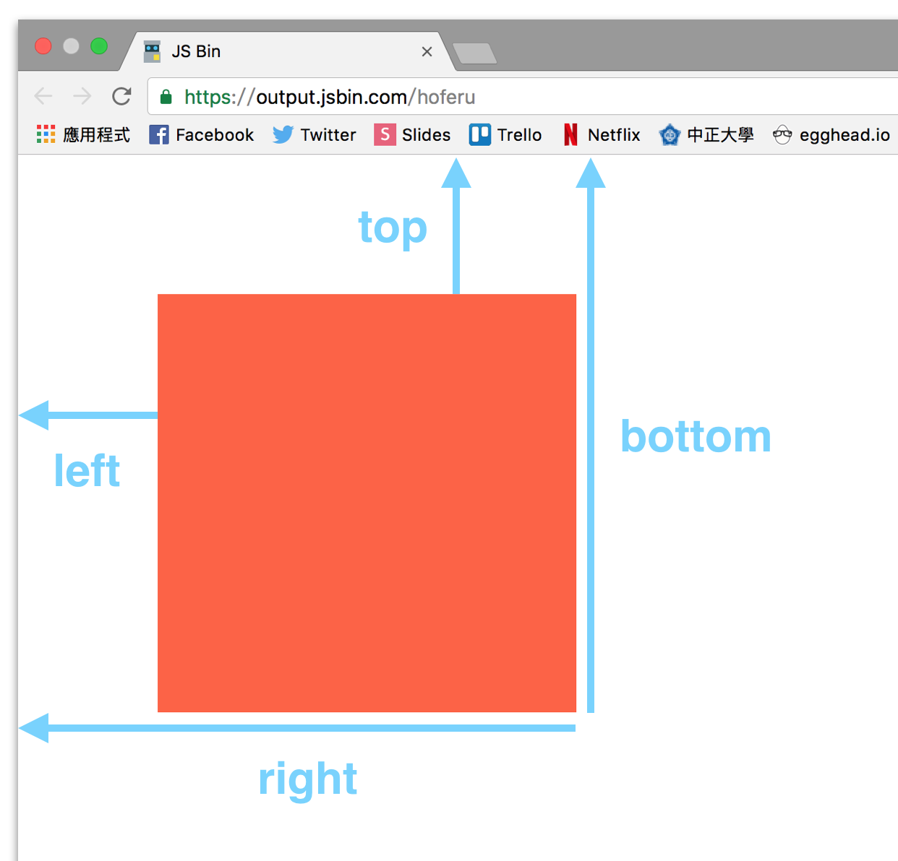
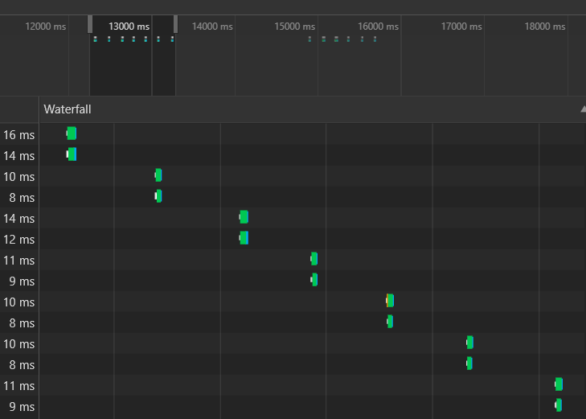
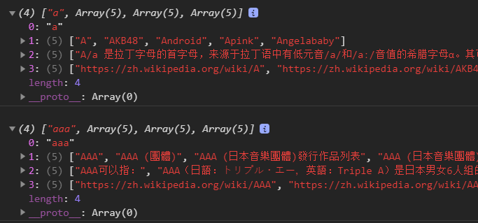
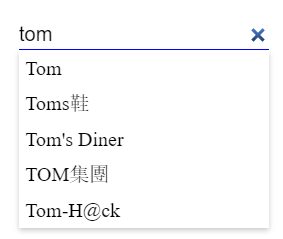

前言 學習一下Rxjs的相關使用,目前的範例大多是v5之前，所以記錄和學習v6的相關修改
以下的例子可以看到，當b$和c$有變化時，a$也會跟著變化
1 2 3 4 5 6 7 8 9 10 11 12 13 14 15 16 17 18 19 20 21 import { from } from 'rxjs' ;import { zip, of } from 'rxjs' ;var b$ = from ([1 , 3 ]);var c$ = from ([2 , 2 ]);var a$ = zip (b$, c$, (b, c ) => { console .log ('b=' + b); console .log ('c=' + c); return b + c; }); a$.subscribe (a => console .log ('a=' + a); })
RxJS的使用參考
創建Obserable的方法
1 import { Observable , Subject , asapScheduler, pipe, of , from , interval, merge, fromEvent, SubscriptionLike , PartialObserver } from 'rxjs' ;
操作符operators
1 import { map, filter, scan } from 'rxjs/operators' ;
websocket
1 import { webSocket } from 'rxjs/webSocket' ;
ajax
1 import { ajax } from 'rxjs/ajax' ;
代表流的變量用＄符號結尾，是RxJS中的一種慣例
RxJS要點 RxJS有一個核心和三個重點，一個核心是Obserable 再加上相關的Operators,三個重點分別是Observer,Subject,Schedulers。
什麼是 Observable 在文檔中說的Observable 更確切的說法是Observable Stream ，也就是Rx的響應式數據流。
在RxJS中Observable 是可被觀察者，觀察者則是Observer ，它們通過Observable的subscribe方法進行關聯
前面提到了RxJS結合了觀察者模式和迭代器模式
對于觀察者模式，我們其實比較熟悉的比如各種DOM事的監聽，也是觀察者模式的一種實踐。核心就是發佈者發佈事件，觀察者選擇時機去訂閱(subscibe)事件。
在ES6中Array,String等可遍歷的數據結構原生部署了迭代器(iterator)接口
1 2 3 4 5 6 7 8 9 10 const numbers = [1 , 2 , 3 ]const iterator= numbers[Symbol .iterator ]();console .log (iterator.next ());console .log (iterator.next ());console .log (iterator.next ());console .log (iterator.next ());
觀察者模式和迭代器模式的相同之處是兩者都是漸進式使用數據的，只不過從數據使用者的角度來說，觀察者模式數據是推送push 過來的，而迭代器模式𣆞自已去拉取pull 的，Rx中的數據是Observable推送的，觀察者不需要主重去拉取。
Obserable與Array相當類似，都可以看作是Collection只不過Observable是a collection of items over time是隨時間發出的一序列元素，所以下面會看到Obserable的一些操作符與Array的方法極其相似
觀察者模式 1 2 3 4 5 6 7 8 9 10 11 12 13 14 15 16 17 18 19 20 21 22 23 24 25 26 27 28 29 30 31 32 33 34 35 class Producer { constructor ( this .listeners = []; } addListener (listener ) { if (typeof listener === 'function' ) { this .listeners .push (listener); } else { throw new Error ('listener 必須是 function' ); } } removeListener (listener ) { this .listeners .splice (this .listeners .indexOf (listener), 1 ); } notify (message ) { this .listeners .forEach (listener => listener (message); }); } } var egghead = new Producer ();function listerner1 (message ){ console .log (message + ' from listener1' ); } function listerner2 (message ){ console .log (message+ ' from listener2' ); } egghead.addListener (listerner1); egghead.addListener (listerner2); egghead.notify ('A new course!!' );
創建Observable 要創建一個Observable，只要給new Observable 傳遞一個接收observer 參數的回調函數，在這個函數中去定義如何發送數據
同步的例子 1 2 3 4 5 6 7 8 9 10 11 12 13 14 import { Observable } from "rxjs" ;const source$ = new Observable (observer => observer.next (1 ); observer.next (2 ); observer.next (3 ); }); const observercb = { next : item =>console .log (item) } console .log ("start" )source$.subscribe (observercb) console .log ("end" )
另一種寫法
1 2 3 4 5 6 7 8 9 10 11 12 13 14 15 import { Observable } from "rxjs" ;const source$ = new Observable (observer => observer.next (1 ); observer.next (2 ); observer.next (3 ); }); console .log ("start" );source$.subscribe (data => console .log (data); }) console .log ("end" );
異步的例子 1 2 3 4 5 6 7 8 9 10 11 12 import { Observable } from 'rxjs' ;const source$ = new Observable (observer => let number = 1 setInterval (() => { observer.next (number++) }, 1000 ); }); console .log ("start" );source$.subscribe (data => console .log (data); }); console .log ("end" );
1 2 3 4 5 6 7 8 9 10 11 12 13 14 15 16 17 18 19 import { Observable } from 'rxjs' ;const source$ = new Observable (observer => let number = 1 let message = { count : number, message : "message " } setInterval (() => { number++; message.count = number; observer.next (message) }, 1000 ); }); console .log ("start" );source$.subscribe (data => console .log (data); }); console .log ("end" );
Obserable 同時可以處理同步與非同步的行為
觀察者Observer Obserable可以被訂閱(subscirbe)或說可以被觀察，而訂閱Obserable的物件又稱為**觀察者(Observer)**。觀察者是一個具有三個方法(method)的物件，每當Obserable發生事件時，更會呼叫觀察者相對應方法。
意這裡的觀察者(Observer)跟上一篇講的觀察者模式(Observer Pattern)無關，觀察者模式是一種設計模式，是思考問題的解決過程，而這裡講的觀察者是○被定義的物件。
觀察者的三個方法(method):
next:每當Obserable發送出新的值，next方法就會被呼叫。
complete:在Obserable沒有其他的資料可以取得時，complete方法就會被呼叫，在complete被呼叫之後，next方法就不會再起作用。
error:每𡮝Obserable內發生錯誤時，error方法就會被呼叫。
說了這麼多，我們還是直接來建立一個觀察者吧！
1 2 3 4 5 6 7 8 9 10 11 12 13 14 15 16 17 18 19 20 21 22 23 24 import { Observable } from 'rxjs' ;var observable$= Observable .create ((observer )=> { observer.next ('Jerry' ); observer.next ('Anna' ); observer.complete (); observer.next ('not work' ); }); let observer ={ next :function (value ){ console .log (value); }, error :function (error ){ console .log (error); }, complete :function ( console .log ('complete' ); } } observable$.subscribe (observer);
上面這段程式碼會印出
1 2 3 Jerry at value day05rxjs.js:13:8 Anna at value day05rxjs.js:13:8 complete at day05rxjs.js:19:8
上面的範例可以看得出來在complete執行後，next就會自動失效，所以沒有印出not work 。
下面則是送出錯誤的範例
1 2 3 4 5 6 7 8 9 10 11 12 13 14 15 16 17 18 19 20 21 22 23 24 25 import { Observable } from "rxjs" ;var observable$ = Observable .create ((observer ) => { try { observer.next ('Jerry' ); observer.next ('Anna' ); throw 'some exception' ; } catch (e) { observer.error (e); } }); var observer = { next : function (value ) { console .log (value); }, error : function (error ) { console .log ('Error: ' , error); }, complete : function ( console .log ('complete' ) } } observable$.subscribe (observer);
會印出
1 2 3 4 Jerry Anna Error: some exception
這裡就會執行error的function印印出Error: some exception
有時候Observable會是一個無限的序列，例如click事件，這時complete方法就有可能永遠不會被呼叫！
我們也可以直接把next,error,complete三個function依序傳入obserable.subscrive如下
1 2 3 4 5 observable$.subscribe ( value =>console .log (value); }, error =>console .log ('Error: ' , error); }, () => { console .log ('complete' ); } );
實作細節 我們之前提到了，其實Observable的訂閱跟addEventListener在實作上有蠻大的差異，雖然他們的行為很像！
addEventListener本質上就是Observer Pattern的實作，在內部會有一份訂閱清單，像是我們實作的Producer
1 2 3 4 5 6 7 8 9 10 11 12 13 14 15 16 17 18 19 20 class Producer { constructor ( this .listeners = []; } addListener (listener ) { if (typeof listener === 'function' ) { this .listeners .push (listener); } else { throw new Error ('listener 必須是 function' ); } } removeListener (listener ) { this .listeners .splice (this .listeners .indexOf (listener), 1 ); } notify (message ) { this .listeners .forEach (listener => listener (message); }); } }
我們在內部儲存了一份所有的監聽者清單’this.listeners’，在要發佈通知時會對逐一的呼叫這份清單的監聽者。
但在Observable不是這樣實作的，在其內部沒有一份訂閱者的清單。訂閱Observable的行無比較像是執行一個物件的方法，並把資料傳進這個方法。
我們以下面的程式碼做說明
1 2 3 4 5 6 7 8 9 10 11 12 13 14 15 16 17 18 import { Observable } from "rxjs" ;let observable$ = Observable .create ((observer ) => { observer.next ('Jerry' ); observer.next ('Anna' ); }); observable$.subscribe ({ next : function (value ) { console .log (value); }, error : function (error ) { console .log (error); }, complete : function ( console .log ('complete' ); } });
像上面這段程式，他的行為比較像這樣
1 2 3 4 5 6 7 8 9 10 11 12 13 14 15 function subscribe (observer ) { observer.next ('Jerry' ); observer.next ('Anna' ); } subscribe ({ next : function (value ) { console .log (value); }, error : function (error ) { console .log (error); }, complete : function ( console .log ('complete' ); } });
這裡可以看到subscribe是一個function，這個function執行時會傳入觀察者，而我們在這個function內部去執行觀察者的方法。
訂閱一個Observable就像是執行一個function
建立 Observable(二) Obaerable有許多創建實例的方法，稱為creation operator，下面會有RxJS常用的creation operator
of 當我們想要同步的 傳遞幾個值時，就可以用of這個opertor來簡潔的表達
1 2 3 4 5 6 7 8 9 10 11 12 13 14 import { of } from "rxjs" ;var source$ = of ('Jery' , 'Anna' );source$.subscribe ({ next : function (value ) { console .log (value) }, complete : function ( console .log ('complete!' ); }, error : function (error ) { console .log (error); } });
from 其實ofoperator的一個一個參數其實就是一個list，而list在JavaScript中最常見的形式是陣列(array) ,那我們可以用from來按收任何可列舉的參數
1 2 3 4 5 6 7 8 9 10 11 12 13 14 15 16 17 18 19 20 21 import { from } from "rxjs" ;var arr = ['Jerry' , 'Anna' , 2016 , 2017 , '30 days' ];var source$ = from (arr);source$.subscribe ({ next : function (value ) { console .log (value); }, complete : function ( console .log ('complete' ); }, error : function (error ) { console .log (error); } });
記得任何可列舉的參數可以用，也就是說像Set,WeakSet,Iterator等都可以當作參數
因為ES6出現後可列舉(iterable)的型別變多了，所以fromArray就被移除了。
另外from還能接收字串(string)
1 2 3 4 5 6 7 8 9 10 11 12 13 14 15 16 17 18 19 import { from } from "rxjs" ;var source$ = from ('鐵人賽' );source$.subscribe ({ next : function (value ) { console .log (value); }, complete : function ( console .log ('complete' ); }, error : function (error ) { console .log (error); } });
也可以傳入Promise物件
1 2 3 4 5 6 7 8 9 10 11 12 13 14 15 16 17 18 19 20 21 import { from } from "rxjs" ;var source$ = from (new Promise ((resolve, reject ) => { setTimeout (() => { resolve ('Hello RxJs' ); }, 3000 ); })); source$.subscribe ({ next : function (value ) { console .log (value); }, complete : function ( console .log ('complete' ); }, error : function (error ) { console .log (error); } });
fromEvent 1 2 3 4 5 6 7 8 9 10 11 12 13 var source = Rx .Observable .fromEvent (document .body , 'click' );source.subscribe ({ next : function (value ) { console .log (value) }, complete : function ( console .log ('complete!' ); }, error : function (error ) { console .log (error) } });
fromEventPattern 要用 Event 來建立 Observable 實例還有另一個方法 fromEventPattern，這個方法是給類事件使用。所謂的類事件就是指其行為跟事件相像，同時具有註冊監聽及移除監聽兩種行為，就像 DOM Event 有 addEventListener 及 removeEventListener 一樣！舉一個例子
1 2 3 4 5 6 7 8 9 10 11 12 13 14 15 16 17 18 19 20 21 22 23 24 25 26 27 28 29 30 31 32 33 34 35 36 37 38 39 40 41 42 43 44 import { fromEventPattern } from "rxjs" ;class Producer { constructor ( this .listeners = []; } addListener (listener ) { if (typeof listener === 'function' ) { this .listeners .push (listener) } else { throw new Error ('listener 必須是 function' ) } } removeListener (listener ) { this .listeners .splice (this .listeners .indexOf (listener), 1 ) } notify (message ) { this .listeners .forEach (listener => listener (message); }) } } var egghead = new Producer ();var source$ = fromEventPattern ( (handler ) => egghead.addListener (handler), (handler ) => egghead.removeListener (handler) ); source$.subscribe ({ next : function (value ) { console .log (value); }, complete : function ( console .log ('complete!' ); }, error : function (error ) { console .log (error); } }); egghead.notify ('Hello! Can you hear me?' );
上面的程式碼可以看到，egghead 是 Producer 的實例，同時具有 註冊監聽及移除監聽兩種方法，我們可以將這兩個方法依序傳入 fromEventPattern 來建立 Observable 的物件實例！
這裡要注意不要直接將方法傳入，避免 this 出錯！也可以用 bind 來寫。
1 2 3 4 5 6 Rx.Observable .fromEventPattern( egghead.addListener.bind(egghead), egghead.removeListener.bind(egghead) ) .subscribe(console.log)
empty,never,throw 有點像是數學上的**零(0)**，雖然有時候好像沒什麼，但卻非常的重要。在Observable的世界裡也有類似的東西，像是empty
1 2 3 4 5 6 7 8 9 10 11 12 13 14 15 import { empty } from "rxjs" ;var source$ = empty ();source$.subscribe ({ next :function (value ){ console .log (value) }, complete : function ( console .log ('complete!' ); }, error : function (error ) { console .log (error) } });
empty 會給我們一個空 的 observable，如果我們訂閱這個 observable 會發生什麼事呢？ 它會立即送出 complete 的訊息！
可以直接把 empty 想成沒有做任何事，但它至少會告訴你它沒做任何事。
數學上還有一個跟零(0)很像的數，那就是無窮(∞) , 在Observable的世界裡我們用 never 來建立無窮的 observable
1 2 3 4 5 6 7 8 9 10 11 12 13 import { never } from "rxjs" ;var source$ = never ();source$.subscribe ({ next : function (value ) { console .log (value) }, complete : function ( console .log ('complete!' ); }, error : function (error ) { console .log (error) } });
never 會給我們一個無窮的 observable，如果我們訂閱它又會發生什麼事呢？…什麼事都不會發生，它就是一個一直存在但卻什麼都不做的 observable。
可以把 never 想像成一個結束在無窮久以後的 observable，但你永遠等不到那一天！
題外話，筆者一直很喜歡平行線的解釋： 兩條平行線就是它們相交於無窮遠
最後還有一個 operator throw，它也就只做一件事就是拋出錯誤。
1 2 3 4 5 6 7 8 9 10 11 12 13 14 import { throwError } from "rxjs" ;var source$ = throwError ('Oop!' );source$.subscribe ({ next : function (value ) { console .log (value) }, complete : function ( console .log ('complete!' ); }, error : function (error ) { console .log ('Throw Error: ' + error) } });
上面這段程式碼就只會 log 出 'Throw Error: Oop!'。
interval,timer 接著我們要看兩個跟時間有關的operators、在JS中我們可以用setInterval來建立一個持續的行為，這也能用在Observable中
1 2 3 4 5 6 7 8 9 10 11 12 13 14 15 16 17 18 19 20 21 22 23 import { Observable } from "rxjs" ;var source$ = Observable .create (observer => var i = 0 ; setInterval (() => { observer.next (i++); }, 1000 ); }); source$.subscribe ({ next : function (value ) { console .log (value) }, complete : function ( console .log ('complete!' ); }, error : function (error ) { console .log ('Throw Error: ' + error); } });
上面這段程式碼，會每隔一秒送出一個從零開始遞增的整數，在Observable的世界也有一個operator可以更方便地做到這件事，就是interval
1 2 3 4 5 6 7 8 9 10 11 12 13 14 15 16 17 import { interval } from "rxjs" ;var source$ = interval (1000 );source$.subscribe ({ next : function (value ) { console .log (value); }, complete : function ( console .log ('complete' ); }, error : function (error ) { console .log ('Throw Error: ' + error); } });
interval有一個參數是數值(Number), 這數值代表發出訊號的間隔時間(ms), 這兩段程式碼基本上是等價的會持續每隔一秒送出一個從零開始遞增的數值
另外有一很相似的operator叫timer,timer可以給兩個參數，範例如下
1 2 3 4 5 6 7 8 9 10 11 12 13 14 15 16 17 import { timer } from "rxjs" ;var source$ = timer (1000 , 5000 );source$.subscribe ({ next : function (value ) { console .log (value); }, complete : function ( console .log ('complete' ); }, error : function (error ) { console .log ('Throw Error: ' + error); } });
當timer有兩個參數時，第一個參數代表要發出第一個值的等待時間(ms),第二個參數代表第一次之後發送值的間隔時間，所以上面這段程式碼會先等一秒送出0之後每5秒送出1，2，3，4…
timer第一個參睥除了可以是數值(Number)之外，也可以是日期(Date), 就會等到指定的時間在發送䇪一個值。
另外timer也可以只接收一個參數
1 2 3 4 5 6 7 8 9 10 11 12 13 14 15 import { timer } from "rxjs" ;var source$ = timer (1000 );source$.subscribe ({ next : function (value ) { console .log (value); }, complete : function ( console .log ('complete' ); }, error : function (error ) { console .log ('Throw Error: ' + error); } });
上面這段程式碼就會等一秒後送出1同時通知結束。
Subscription 有提到很多無窮的Observable，例如interval,never。但有時候我們可能會在某些行為後不需要這些資源，要做到這件事最簡單的方法就是unsubscribe。
其實在訂閱Observable後，會回傳一個subscription物件，這個物件具有釋放資源的unsubscribe方法。範例如下
1 2 3 4 5 6 7 8 9 10 11 12 13 14 15 16 17 18 19 20 21 22 import { timer } from "rxjs" ;var source$ = timer (1000 , 1000 );var subscription = source$.subscribe ({ next : function (value ) { console .log (value); }, complete : function ( console .log ('complete' ); }, error : function (error ) { console .log ('Throw Error: ' + error); } }); setTimeout (() => { subscription.unsubscribe (); }, 5000 );
這裡我們用了setTimeout在5秒後，執行了subscription.unsubscribe()來停止訂閱並釋放資源。另外subscription物件還有其他合併訂閱等作用。
Events observable盡畫不要用unsubscribe,通常我們會使用takeUntil,在某個載件發生後來完成Eventobservable
Observable Operators & Marble Diagrams
Observable的Operators是實數應用上最重要的部份，我們需要了解各種Operators的使用方式，才能輕鬆實作各種需求！
關於轉換(Transformation)、過濾(Filter)、合併(Combination)等操作方法，先來知道什麼是Operator
什麼是Operator? Operators就是一個個被附加到Observable型別的函式，例如像是mag,filter,contactall…等等，所有這些函式都拿到原來的Observable並回傳一個新的observable，有像下面的樣子
1 2 3 4 5 6 7 8 9 10 11 12 13 14 15 16 17 18 19 20 21 import { of , Observable } from "rxjs" ;var people = of ("Jerry" , "Anna" );function map (source$, callback ) { return Observable .create ((observer ) => { return source$.subscribe ((value ) => { try { observer.next (callback (value)); } catch (e) { observer.error (e); } }, (err ) => { observer.error (e); }, () => { observer.complete (); } ); }); } var helloPeople = map (people, (item ) => item + " Hello~" );helloPeople.subscribe (console .log )
這裡可以看到我們寫了一個map的函式，它接收兩個參數，第一個是原本的observable, 䇪二個是map的callback function。map內部第一件事就是用create建立一個新的observable並回傳，並且在內部訂閱原本的observable。
這裡有兩個重點是我們一定要知道的，每個operator都會回傳一個新的ooservable,而我們可以透過create的方法建立各種operator
我們需要先訂定一個簡單的方式來表達observable
Marble diagrams 我們在傳達事物時，文字其實是最糟的手段，雖然文字是我們平時溝通的基礎，但常常千言萬語也比不過一張清楚的圖。如果我們能訂定observable的圖示，就能讓我自更方便的溝通及理解observable的各種operators!
我們把描繪 observable 的圖示稱為 Marble diagrams，在網路上 RxJS 有非常多的 Marble diagrams，規則大致上都是相同的，這裡為了方便撰寫以及跟讀者的留言互動，所以採用類似 ASCII 的繪畫方式。
我們用-來表達一小段時𫂾，這些-串起來就代表一個observable
X(大寫X)則代表有錯誤發生
|則代表observable結束
在這個時間序當中，我們可能會發出值(value), 如果值是數字則直接用阿拉伯數字取代，其他的資料型別則用相近的英文符號代表，𫍇裡我們用interval舉例
1 var source$=interval (1000 );
source$的圖型就會長像這樣
1 ----0-----1-----2-----3--...
當observable是同步送值的時候，例如
1 var source$=of (1 ,2 ,3 ,4 );
source$的圖形就會長像這樣
小括號代表著同步發生
另外的Marble diagrams也能夠表達operator的前後轉換，例如
1 2 var source=interval (1000 );var newest =source.map (x =>1 )
這時候Marble diagrams就會長像這樣
1 2 3 source : -----0-----1-----2-----3--... map(x => x + 1) newest: -----1-----2-----3-----4--...
最上面原本的observable, 中間是operator，下面則是新的observable
Marble Diagrams 相關資源：http://rxmarbles.com/
Operators map Observable的map方法使用上跟陣列的map是一樣的，我們傳入一個callback function，這個callback function會帶入每次發送出來的元素，然後我們回傳新的元素
1 2 3 4 5 6 7 8 9 10 11 import { interval } from "rxjs" ;import { map } from 'rxjs/operators' ;var source$ = interval (1000 );var newest$ = source$.pipe ( map (x =>2 ) ); newest$.subscribe (console .log );
用Marble diagrams表達就是
1 2 3 source : -----0-----1-----2-----3--... map(x => x + 2) newest: -----2-----3-----4-----5--...
有另外一個方法跟map很像叫mapTo
mapTo mapTo可把傳進來的值改成一固定的值
1 2 3 4 5 6 7 8 9 10 import { interval } from "rxjs" ;import { map, mapTo } from 'rxjs/operators' ;var source$ = interval (1000 );var newest$ = source$.pipe ( mapTo (2 ) ); newest$.subscribe (console .log );
mapTo用Marble diagrams表達
1 2 3 source : -----0-----1-----2-----3--... mapTo(2) newest: -----2-----2-----2-----2--...
filter filter在使用上也跟陣列的相同，我們要傳入一個callback function，這個function會傳入每個被送出的元素，並且回傳一個boolean值，如果為true的話就會保留，如果為false就會被濾掉
1 2 3 4 5 6 7 8 9 10 11 import { interval } from "rxjs" ;import { map, mapTo, filter } from 'rxjs/operators' ;var source$ = interval (1000 );var newest$ = source$.pipe ( filter (x =>2 === 0 ) ); newest$.subscribe (console .log );
filter用Marble diagrams表達
1 2 3 source: -----0-----1-----2-----3-----4--... filter(x => x%2 === 0) newest: -----0-----------2-----------4---...
map ,filter這些方法其實都跟陣列的相同，因為這些都是fucntional programming的通用函式。
實際上Observable跟Array的operators(map,filter)，在行為上還是有極大的差異，當我們的資料量很大時，Observable的效能會好上非常多。
take take 是一個很簡單的operator, 顧名思義就是取前幾個元素後就結束
1 2 3 4 5 6 7 8 9 10 11 12 13 14 import { interval } from "rxjs" ;import { map, mapTo, take } from 'rxjs/operators' ;var source$ = interval (1000 );var example$ = source$.pipe (take (3 ));example$.subscribe ({ next : (value ) => { console .log (value); }, error : (err ) => { console .log ("Error: " + err); }, complete : () => { console .log ("complete" ); } });
這裡可以看到我們的source$原本是會發出無限元素的，但這裡我們用take(3)就會只取前3個元素，取完後就直接結束(complete), 用Marble diagram表如下
1 2 3 source $:-----0-----1-----2-----3--.. take(3) example:-----0-----1-----2|
first first會取observable送出的第一個元素之後就直接結束，行為跟takb(1)一樣
1 2 3 4 5 6 7 8 9 10 11 import { interval } from "rxjs" ;import { first, take } from "rxjs/operators" ;var source$ = interval (1000 );var example$ = source$.pipe (first ());example$.subscribe ({ next : (value ) => { console .log (value); }, error : (err ) => { console .log ("Error: " + err); }, complete : () => { console .log ("complete" ); } });
用Marble diagram表示
1 2 source$ :-----0-----1-----2-----3--.. example$:-----0|
takeUntil 在實數上takeUntil很常使用到，他可以在某件事情發生時，讓一個observable直送出完成(complete)訊息
1 2 3 4 5 6 7 8 9 10 import { interval, fromEvent } from "rxjs" ;import { first, takeUntil } from "rxjs/operators" ;var source$ = interval (1000 );var click = fromEvent (document .body , "click" );var example$ = source$.pipe (takeUntil (click));example$.subscribe ({ next : (value ) => { console .log (value); }, error : (err ) => { console .log ('Error: ' + err); }, complete : () => { console .log ('complete' ); } });
stackblitz
這裏我們一開始先用interval建立一個observable，這個observable每隔1秒會送出一個從0開𤖥遞增的數值，接著我們用takeUntil,傳人另一個observable.
當tabkeUntil傳入的observable發送值時，原本的observable就會直托進人完成(complete)狀態，並且發送完成訊息。也就是說上面這沒程式碼的行為，會先每一秒印出一個數字(從0遞增)直到我們點擊body為止，他才會送出complete訊息。如果畫成Maribe diagram則會像下面
1 2 3 4 source$ :-----0-----1-----2-----3--.. click :---------------------c------ takeUntil(click) example$:-----0-----1-----2---|
當click一發送元素的時候，observable就會直接完縑(complete)
concatAll 有時我們的Observable送出的元素又是一個observable就像是二維陣列，陣列裡面的元素是陣列，這時我們就可以用concatAll 它攤平成一維陣列，也可以直接把concatAll想成把所有元素concat起來。
1 2 3 4 5 6 7 8 9 10 11 12 13 import { of , fromEvent } from "rxjs" ;import { map,concatAll } from 'rxjs/operators' ;var click = fromEvent (document .body , 'click' );var source$ = click.pipe ( map (e =>of (1 , 2 , 3 )) ); var example$ = source$.pipe (concatAll ());example$.subscribe ({ next : (value ) => { console .log (value); }, error : (err ) => { console .log ('Error: ' + err); }, complete : () => { console .log ('complete' ); } });
stackblitz
這個範例我們每點一次body就會立刻送出1,2,3，如果用Marble diagram表示則如下
1 2 3 4 5 6 click : ------c----------c----------- map(e => of(1, 2, 3)) source : ------o----------o----------- \ \ (123)| (123)| example:-------(123)------(123)-------
這裡可以看到sourceobservable內部每次發送的值也是observable，這時我們用concatAll就可以把source攤平成example
這裡需要注意的是concatAll會處理source先發出來的observable，必須等到這個observable結事，才會再處理下一固source發出來的observable，以下面這個範例說明。
1 2 3 4 5 6 7 8 9 10 11 12 13 14 15 16 17 18 19 20 21 22 import { interval } from "rxjs" ;import { take, concatAll } from "rxjs/operators" ;var obs1$ = interval (1000 ).pipe (take (5 ));var obs2$ = interval (500 ).pipe (take (2 ));var obs3$ = interval (2000 ).pipe (take (1 ));var source$ = of (obs1$, obs2$, obs3$);var example$ = source$.pipe (concatAll ());example$.subscribe ({ next : (value ) => { console .log (value); }, error : (err ) => { console .log ('Error: ' + err); }, complete : () => { console .log ('complete' ); } });
這裡可以看到source會送出3個observable，但是concatAll後的行為永遠都是先處理第一個observable,等到當前處理的結事後才會再處理下一個
用Marble diagram表示如下
1 2 3 4 5 source : (o1) o2 o3)| \ \ \ --0--1--2--3--4| -0-1| ----0| concatAll() example: --0--1--2--3--4-0-1----0
簡易拖拉 當看完前面幾個operator後，我們就很輕鬆地做出拖拉的功能，先讓我們來看一下需求
首先畫面上有一僤元件(#drag)
當滑鼠在元件(#drag)上按下左鍵(mousedwon)時，開始監聽滑鼠移動(mousemove)的位置
當滑鼠左鍵放掉(mouseup)時，結束監聽滑鼠移動
當滑鼠移動(mousemove)被監聽時，跟著修改元件的樣式屬性
第一步如下stackblitz
第二步我們要先取得各個 DOM 物件，元件(#drag) 跟 body。
1 2 const dragDOM = document .getElementById ('drag' );const body = document .body ;
要取得body的原因是因為滑鼠移動(moudemove)跟滑鼠左鍵放掉(mouseup)都應該是在整個body監聽
第三步我們寫出各個會用的監聽事件，並用fromEvent來取得各個observable.
對#drag監聽moudedown
對body監聽mouseup
對body監聽mousemove
1 2 3 const mouseDown = fromEvent (dragDOM, 'mousedown' );const mouseUp = fromEvent (body, 'mouseup' );const mouseMove = fromEvent (body, 'mousemove' );
還沒subscribe之前都不會開始監聽，一定會𨬓到subscribe之後obserable才會開始送值
當mouseDown時，轉成mouseMove的事件
mouseMove要在mouseUp後結束加上takeUntil(mouseup)
1 2 3 const source = mouseDown.pipe ( map (event =>pipe (takeUntil (mouseUp))) );
這時source大概長像這樣
1 2 3 source : -------e--------------------e-------- \ \ --m-m-m-m/ -m--m-m--m-m/
m 代表mousemove event
用concatAll()攤平source成一維
1 2 3 4 const source = mouseDown.pipe ( map (event =>pipe (takeUntil (mouseUp))), concatAll () );
用map把mousemove event轉成x,y的位置，並且訂閱
1 2 3 4 5 6 7 8 const source = mouseDown.pipe ( map (event =>pipe (takeUntil (mouseUp))), concatAll (), map (event =>x : event.clientX , y : event.clientY })) ).subscribe (pos => dragDOM.style .left = pos.x + 'px' ; dragDOM.style .top = pos.y + 'px' ; });
雖然這只是一個簡單的拖拉實現，但已經展示出 RxJS 帶來的威力，它讓我們的程式碼更加的簡潔，也更好的維護！
skip take可以取前幾個送出的元素，而可以略出前幾個送出的元素skip, 範例如下
1 2 3 4 5 6 7 8 9 10 11 12 13 14 15 import { interval, from } from "rxjs" ;import { skip } from "rxjs/operators" ;var source$ = interval (1000 );var example$ = source$.pipe ( skip (3 ) ); example$.subscribe ({ next : (value ) => { console .log (value); }, error : (err ) => { console .log ('error: ' + err) }, complete : () => { console .log ('complete' ); } });
原本從0開𤖥的就會變成從3開𤖥，但是記得原本元素的等得時𫂾仍然存在，也就是說此範例第一個取得的元素需要等4秒，用Marble Diagram表示如下
1 2 3 source $ : ----0----1----2----3----4----5--... skip(3) example$: -------------------3----4----5--...
takeLast 除了可以用take取前幾個之外，我們也可以倒過來取最後幾個，範例如下
1 2 3 4 5 6 7 8 9 10 11 12 13 14 15 import { interval, from } from "rxjs" ;import { take, takeLast } from "rxjs/operators" ;var source$ = interval (1000 ).pipe ( take (6 )); var example$ = source$.pipe ( takeLast (2 )); example$.subscribe ({ next : (value ) => { console .log (value); }, error : (err ) => { console .log ('error: ' + err) }, complete : () => { console .log ('complete' ); } });
這裡我們先取了前6個元素，再取最後兩個，所以最後會送出4,5,complete，有一個重點。就是takeLast必須等到整個observable完成(complete), 才能知道最後的元素有哪些，並且同步送出 ,如果有Marbe Diagram表示如下
1 2 3 source $ : ----0----1----2----3----4----5| takeLast(2) example$ : ------------------------------(45)|
可以看到takeLast後，必需等到原本的observable完成後，才立即同步送出4,5,complete
last 跟take(1)相同，我們有一個takeLast(1)的簡化寫法，那就是last()用來取得最後一個元素
1 2 3 4 5 6 7 8 9 10 11 12 import { interval, from } from "rxjs" ;import { last, take } from "rxjs/operators" ;let source$ = interval (1000 ).pipe ( take (6 )); let example$ = source$.pipe ( last ()); example$.subscribe ({ next : (value ) => { console .log (value); }, error : (err ) => { console .log ('error: ' + err) }, complete : () => { console .log ('complete' ); } });
用Marble Diagram表示如下
1 2 3 source $ : ----0----1----2----3----5| last() example$ : --------------------------(5)|
concat concat可以把多個observable實例合併成一個
1 2 3 4 5 6 7 8 9 10 11 12 13 14 15 16 17 18 19 20 import { interval, of } from "rxjs" ;import { concat, take } from "rxjs/operators" ;let source$ = interval (1000 ).pipe (take (3 ));let source2$ = of (3 );let source3$ = of (4 , 5 , 6 );var example$ = source$.pipe (concat (source2$, source3$));example$.subscribe ({ next : (value ) => { console .log (value); }, error : (err ) => { console .log ('error: ' + err) }, complete : () => { console .log ('complete' ); } });
跟concatAll一樣，必須先等前一個observable完成(complete), 才會繼續下一個，用Marble Diagram表示如下
1 2 3 4 5 source $ :----0----1----2|source2$:(3)| source3$:(456)| concat() example$:----0-----1----2(3456)|
startWith startWith可以在observable的一開始塞要發送的元素，有點像concat但參數不是observable而是要發送的元素
1 2 3 4 5 6 7 8 9 10 11 12 13 14 import { interval, of } from "rxjs" ;import { startWith } from "rxjs/operators" ;let source$ = interval (1000 );let example$ = source$.pipe (startWith (0 ));example$.subscribe ({ next : (value ) => { console .log (value); }, error : (err ) => { console .log ('error: ' + err) }, complete : () => { console .log ('complete' ); } });
這裡可以看到我們在source$一開始塞了一個0, 讓example$會在一開始就立即送出0，用Marble Diagram表示如下
1 2 3 source $ :----0----1----2----3--... startWith(0) example :(0)----0----1----2----3-...
記得 startWith 的值是一開始就同步發出的，這個 operator 很常被用來保存程式的起始狀態！
merge merge跟concat一樣都是用來合併observable，但他們在行為上有非常大的不同
1 2 3 4 5 6 7 8 9 10 11 12 13 14 15 16 17 18 19 20 21 import { interval } from "rxjs" ;import { take, merge } from "rxjs/operators" ;let source$ = interval (500 ).pipe (take (3 ));let source2$ = interval (300 ).pipe (take (6 ));let example$ = source$.pipe (merge (source2$));example$.subscribe ({ next : (value ) => { console .log (value); }, error : (err ) => { console .log ('error: ' + err) }, complete : () => { console .log ('complete' ); } });
merge把多個observable同時處理，這跟concat一次處理一個observable是完全不一樣的，由於是同時處理行為會變得較為複雜，用Marble Diagram會較好解釋
1 2 3 4 source$ : ----0----1----2| source2$: --0--1--2--3--4--5| merge() example$: --0-01--21-3--(24)--5|
這裡可以看到mergr之後的example在時間序上同時在跑source$與source2$,當兩件事情同時發生時，會同步送出資料(被merge的在後面),當兩個observable都結事時才會真的結束。
merge的邏輯有點像是OR(||)就是當兩個observable其中一個被觸發時都可以被處理，這很常用一個以上的按鈕具有部分相同的行為。
例如一個影片播放器有兩個按鈕，一個是暫停(||) 另一個是結束播放(□)。這兩個按鈕都具有相同的行為就是影片會被停止，只是結束播放會讓影片回到00秒，這時我們就可以把這兩個按鈕的事件merge起來處理影片暫停這件事。
1 2 3 4 var stopVideo= stopButton.pipe(merge(endbutton)); stopVideo.subscribe(()=>{ //暫停播放影片 });
combineLatest 它會取得各個observable最後送出的值，再輸出成一個值
1 2 3 4 5 6 7 8 9 10 11 12 13 14 15 16 17 18 19 20 21 import { interval } from "rxjs" ;import { take, combineLatest } from "rxjs/operators" ;var source$ = interval (500 ).pipe (take (3 ));var newest$ = interval (300 ).pipe (take (6 ));var example$ = source$.pipe (combineLatest (newest$, (x, y ) => x + y));example$.subscribe ({ next : (value ) => { console .log (value); }, error : (err ) => { console .log ('error: ' + err) }, complete : () => { console .log ('complete' ); } });
看Marble diagram
1 2 3 4 source $ : ----0----1----2|newest$ : --0--1--2--3--4--5| combineLatest(newest$,(x,y)=>x+y); example$: ----01--23-4--(56)--7|
首先combineLatest可以接收多個observable,最後一個參數是callback function,這個callback function接收的參睥數量跟合併的observable數量相同，依照範例來說，因為我們這裡合併了兩個observable所以後面的callback function就接教收x,y兩個參數，x會接收從source$發送出來的值，y會接收newest$發送出來的值。
最後一個重點就是一定會等兩個observable都曾有送值 出來才會呼叫我們傳入的callback，所以這段程式是這樣運行的
newest$送出了0, 但此時source$並沒有送出過任何值，所以不會執行callback
source$送出了0,但此時newest$最後一次送出的值為0,把這兩個數傳入callback得到0
newest$送出了1此時source$最後一次送出的值為0, 把這兩個數傳入callback得到1
newest$送出了 2，此時 source$ 最後一次送出的值為 0，把這兩個數傳入 callback 得到 2。
source$ 送出了 1，此時 newest$ 最後一次送出的值為 2，把這兩個數傳入 callback 得到 3。
newest$ 送出了 3，此時 source$ 最後一次送出的值為 1，把這兩個數傳入 callback 得到 4。
source$ 送出了 2，此時 newest$ 最後一次送出的值為 3，把這兩個數傳入 callback 得到 5。
source$ 結束，但 newest$ 還沒結束，所以 example 還不會結束。
newest$ 送出了 4，此時 source$ 最後一次送出的值為 2，把這兩個數傳入 callback 得到 6。
newest$ 送出了 5，此時 source$ 最後一次送出的值為 2，把這兩個數傳入 callback 得到 7。
newest$ 結束，因為 source$ 也結束了，所以 example$ 結束。
不管是source$還是newest$送出值來，只要另一方曾有送出過值(有最後的值)，就會執行callback並送出新的值，𫍇就是combineLastest
combineLastest很常用在運算多個因子的結果，例如最常見的BMI計算，我們身高變動時就拿上一次的體重計算新的BMI，當體重變動時則拿上次的身高計算BMI，這就很適合用combineLastest來處理
zip zip會取每個observable相同順位的元素並傳入callback, 也就是說每個observable的第n個元素會一起被傳入callback
1 2 3 4 5 6 7 8 9 10 11 12 13 14 15 16 17 import { interval } from "rxjs" ;import { take,zip} from "rxjs/operators" ;var source$ = interval (500 ).pipe (take (3 ));var newest$ = interval (300 ).pipe (take (6 ));var example$ = source$.pipe (zip (newest$, (x, y ) => x + y));example$.subscribe ({ next : (value ) => { console .log (value); }, error : (err ) => { console .log ('error: ' + err) }, complete : () => { console .log ('complete' ); } });
Marble Diagram
1 2 3 4 source $ : ----0----1----2|newest$ : --0--1--2--3--4--5| zip(newest$,(x,y)=>x+y) example$: ----0----2----4|
zip會等到source$跟newest$都送出了第一個元素 ，再傳入callback，下次則等到soure$跟newest$都送出了䇪二個元素 再一起傳入callback，所以運行的步驟如下
newest$ 送出了第一個 值 0，但此時 source$ 並沒有送出第一個 值，所以不會執行 callback。
source$ 送出了第一個 值 0，newest$ 之前送出的第一個 值為 0，把這兩個數傳入 callback 得到 0。
newest$ 送出了第二個 值 1，但此時 source$ 並沒有送出第二個 值，所以不會執行 callback。
newest$ 送出了第三個 值 2，但此時 source$ 並沒有送出第三個 值，所以不會執行 callback。
source$ 送出了第二個 值 1，newest$ 之前送出的第二個 值為 1，把這兩個數傳入 callback 得到 2。
newest$ 送出了第四個 值 3，但此時 source$ 並沒有送出第四個 值，所以不會執行 callback。
source$ 送出了第三個 值 2，newest$ 之前送出的第三個 值為 2，把這兩個數傳入 callback 得到 4。
source$ 結束 example$ 就直接結束，因為 source$ 跟 newest$ 不會再有對應順位的值
zip會把各個observable相同順位送出的值傳入callback, 這很常拿來做demo使用。比如我們想要間隔100ms送出’h’,’e’,’l’,’l’,’o’,就可以這麼做
1 2 3 4 5 6 7 8 9 10 import { from , interval } from "rxjs" ;import { zip } from "rxjs/operators" ;var source$ = from ('hello' );var source2$ = interval (100 );var example$ = source$.pipe (zip (source2$, (x, y ) => x));example$.subscribe ({ next : (value ) => { console .log (value); }, error : (err ) => { console .log ('error: ' + err) }, complete : () => { console .log ('complete' ); } });
這裡的 Marble Diagram 就很簡單
1 2 3 4 source $ : (hello)|source2$: -0-1-2-3-4-... zip(source2$, (x, y) => x) example$: -h-e-l-l-o|
這裡我們利用 zip 來達到原本只能同步送出的資料變成了非同步的，很適合用在建立示範用的資料。
建議大家平常沒事不要亂用 zip，除非真的需要。因為 zip 必須 cache 住還沒處理的元素，當我們兩個 observable 一個很快一個很慢時，就會 cache 非常多的元素，等待比較慢的那個 observable。這很有可能造成記憶體相關的問題！
withLastestFrom withLatestFrom運作方式跟combineLastest有點像，只是他有主從的關系，只有在主要的observable送出新的值時，才會執行callback, 附隨的observable只有在背景下運作。
1 2 3 4 5 6 7 8 9 10 11 12 13 14 15 16 17 18 19 20 import { from , interval } from "rxjs" ;import { zip, withLatestFrom } from "rxjs/operators" ;var main$ = from ("hello" ).pipe (zip (interval (500 ), (x, y ) => x));var some$ = from ([0 , 1 , 0 , 0 , 0 , 1 ]).pipe (zip (interval (300 ), (x, y ) => x));var example$ = main$.pipe (withLatestFrom (some$, (x, y ) => { return y === 1 ? x.toUpperCase () : x; })); example$.subscribe ({ next : (value ) => { console .log (value); }, error : (err ) => { console .log ('error: ' + err) }, complete : () => { console .log ('complete' ); } });
看一下Marble Diagram
1 2 3 4 main$ : ----h----e----l----l----o| some$ : --0--1--0--0--0--1| withLastestFrom(some$,(x,y) => y === 1 ? x.toUpperCase() : x) example$: ----h----e----l----L----O|
withLatestFrom會在main送出值的時候執行callback,但注意如果main$送出值時some$之前沒有送出過任何值callback仍然不會執行
這陆鄉們在main送出值時，去判斷some$最後一 送的值是不是1來決定是否要切換大小寫
main$送出了h, 此時some$上一次送出的值為0, 把這兩個參數傳入callback得到h 。
main$送出了e, 此時some$上一次送出的值為0, 把這兩個參數傳入callback得到e 。
main$送出了l, 此時some$上一次送出的值為0, 把這兩個參數傳入callback得到l 。
main$送出了l, 此時some$上一次送出的值為1, 把這兩個參數傳入callback得到L 。
main$送出了o, 此時some$上一次送出的值為1, 把這兩個參數傳入callback得到O。
withLastestFrom很常用在一些checkbox型的功能，例如說一個編輯器，我們開啟粗體後，打出的字就都要變粗體，粗體就像是some observable，而我們打字就是main observable
實務範例-完整拖拉應用 當我們在優酷看影片時往下滾動畫面，影片會變成一個小視窗在右下角，這個視窗還能夠拖挽移動位置。這個功能可以讓使用者一邊看留言同時又能看影片，且不影響其他的資訊顯示，真是不錯的feature。來實作這個功能，同時補完拖拉所需要注意的細節吧！
需求分析 首先我們會有一個影片在最上方，原本是位置是靜態(static)的，捲軸滾到低於影片高度後，影片改為相對於視窗的絕對位置(fixed),往回滾會再變回原來的狀態。當影片為fixed時，滑鼠移至影片上方(hover)會有遮罩(masker)與鼠標變化(cursor)，可以拖拉移動(drag)，且移動範圍不超過可視區間！
上面可以拆成以下幾個步驟
準備static樣式與fixed樣式
HTML要有一固定位置的錨點(anchor)
當滾動超過錨點，則影片變成fixed
當往回滾動過錨點上方，則影片變回static
影片fixed時，要能夠拖拉
拖拉範圍限制在當前可視區間
其本的HTML跟CSS可以到此連結stackblitz
先讓我們看一下HTML，首先在HTML裡有一個div(#anchor), 這個div(#anchor)就是待會要做錨點用的，它內部有一個div(#video), 則是滾動後要改變成fixed的元件
CSS的部分我們只需要知道滾動到下方後，要把div(#video)加入videx-fixed這個class。
接著我們就開始實作滾動的效果切探class的效果吧！
第一步取得會用到的DOM 因為先做滾動切換class, 所有這裡用到的DOM只有#video,#anchor。
1 2 const video =document .getElementById ('video' );const anchor = document .getElementById ('anchor' );
第二步建立會用到的observable 這裡做滾動效果，所以只需要監聽滾動事件。
1 2 3 4 import { fromEvent } from "rxjs" ;const scroll$= fromEvent (document ,'scroll' );
第三步撰寫程式邏輯 這裡我們要取得了scroll事件的observable，當滾過#anchor最底部時，就改變#video的class。
首先我們會需要滾動事件發生時，去判斷是否滾過#anchor最底部 ，所以把原來的滾動事件變成是否滾動最底部的true or false。
1 2 3 scroll$.pipe ( map (e =>getBoundingClientRect ().bottom <0 ) );
這裡我們用山getBoundingClientRect這個瀏覽器原生的API，他可以取得DOM物件的寬高以及上下左右離螢幕可視區間上(左)的距離如下圖

當我們可視範圍區間滾過#ancor底部時，anchor.getBoundingClientRect().bottom就會變成負值，此時我們就改變#video的class。
1 2 3 4 5 6 7 8 9 scroll$.pipe ( map (e =>getBoundingClientRect ().bottom <0 ) ).subscribe (bool => if (bool){ video.classList .add ('video-fixed' ); }else { video.classList .remove ('video-fixed' ); } });
這裡我們就已經完成滾動變更樣式的效果了
全部的JS程式碼如下
1 2 3 4 5 6 7 8 9 10 11 12 13 14 15 16 import './style.scss' ;import { fromEvent } from "rxjs" ;import { map } from 'rxjs/operators' ;const video =document .getElementById ('video' );const anchor = document .getElementById ('anchor' );const scroll$= fromEvent (document ,'scroll' );scroll$.pipe ( map (e =>getBoundingClientRect ().bottom <0 ) ).subscribe (bool => if (bool){ video.classList .add ('video-fixed' ); }else { video.classList .remove ('video-fixed' ); } });
當然這段還能在用 debounce/throttle 或 requestAnimationFrame 做優化
擒下來我們就可以接著做拖拉的行為 了。
第一步取得會用到的DOM 這裡我們會用到的DOM跟前面是一樣的(#video)，所以不用多做什麼。
第二步建立會用到的observable 這裡跟上次一樣，我們會用到mousedown,mouseup,mousemove三個事件。
1 2 3 const mouseDown$ = fromEvent (video,'mousedown' );const mouseUp$ = fromEvent (document ,"mouseup" );const mouseMove$ = fromEvent (document ,"mousemove" );
第三步撰寫程式邏輯 跟上次是差不多的，首先我們會點擊#video元件，點擊(mousedown)後要變成移動事件(mousemove),而移動事件會在滑鼠收開(mouseup)時結事(takeUntil)
1 2 3 4 5 mouseDown$.pipe ( map (e =>pipe (takeUntil (mouseUp$))), concatAll () );
因為把moudeDown$ observable發送出來的事件 換成了mouseMove$ observable，所以變成了observable(mouseDown$)送出observable(mouseMove$)。因此最後用concalAll把後面送出的元素變成mousemove的事件。
但這裡會有一個問題，就是我們的𫍇段拖拉事件其實只能做用到video-fixed的時候，所以我們要加上filter
1 2 3 4 5 6 mouseDown$.pipe ( filter (e =>classList .contains ("video-fixed" )), map (e =>pipe (takeUntil (mouseUp$))), concatAll () );
這裡我們用filter如果當下#video沒有video-fixedclass的話，事件就不會送出。
再來我們就能跟上次一樣，把mousemove事件變成{x,y}的物件，並訂閱來改變#video元件
1 2 3 4 5 6 7 8 9 10 11 12 13 14 15 mouseDown$.pipe ( filter (e =>classList .contains ("video-fixed" )), map (e =>pipe (takeUntil (mouseUp$))), concatAll (), map (m => return { x : m.clientX , y : m.clientY } }) ) .subscribe (pos => video.style .top = pos.y + "px" ; video.style .left = pos.x + "px" ; });
到這裡我們基本上已經完成了所有功能和之前簡易拖拉的方法是一樣的。
但這裡有兩個大問題我們還沒有解決
第一次拉動的時候會閃一下，不像優酷那麼順。
拖拉會跑出當前可視區間，跑出去後就抓不回來了
讓我們一個一個解決，首先第一個問題是因為我們的拖拉直接給元件滑鼠的位置(clientC,clientY),而非給滑鼠相對移動的距離！
所以要解決這個問題很簡單，我們只要把點擊目標的左上角當作(0,0), 並以此改變元件的樣式，就不會有閃動的問題。 這個要怎麼做呢？很簡單，使用withLatestFrom的operator我們可以用它來把mousedown與mousemove兩個Event的值同時傳入callback。
1 2 3 4 5 6 7 8 9 10 11 12 13 14 15 16 mouseDown$.pipe ( filter (e =>classList .contains ("video-fixed" )), map (e =>pipe (takeUntil (mouseUp$))), concatAll (), withLatestFrom (mouseDown$, (move, down ) => { return { x : move.clientX - down.offsetX , y : move.clientY - down.offsetY } }) ) .subscribe (pos => video.style .top = pos.y + "px" ; video.style .left = pos.x + "px" ; });
當我們能夠同時得到mousemove跟mousedown的事件，接著就只要把滑鼠相對可視區間的距離(client)減掉點按下去時，滑鼠相對元件邊界的距離(offset)就行了。這時拖拉就不會先閃動一下囉！
大家只要想一下，其實client-offset就是元件相對於可視區間的距離，也就是他一開始沒動的位置！
接著讓我們解決第二個問題，拖拉會超出可視範圍。這個問題其實只史給最大最小值就行了，因無需求的關系，這裡我們的元件是相對可視的區間的絕對位置(fixed),也就是就說
top 最小是0
left 最小是0
top 最大是可視高度 扣掉元件本身高度
left 最大是可視寬度 扣掉元件本身寬度
這裡我們先宣告一個function來處理這件事
1 2 3 const validValue = (value, max, min ) => { return Math .min (Math .max (value, min), max) }
第一個參數給原本要給的位置值，後面給最大跟最小，如果今天大於最大值我們就取最大值，如果今天小於最小值則取最小值。
再來我們就可以直接把這個問題解掉了
1 2 3 4 5 6 7 8 9 10 11 12 13 14 15 16 mouseDown$.pipe ( filter (e =>classList .contains ("video-fixed" )), map (e =>pipe (takeUntil (mouseUp$))), concatAll (), withLatestFrom (mouseDown$, (move, down ) => { return { x : validValue (move.clientX - down.offsetX , window .innerWidth - 320 , 0 ), y : validValue (move.clientY - down.offsetY , window .innerHeight - 180 , 0 ) } }) ) .subscribe (pos => video.style .top = pos.y + "px" ; video.style .left = pos.x + "px" ; });
這裡偷懶了一下，直接寫死元件的寬高(320,180)，實際上應用getBoundingClientRect計算是比較好的。
scan,buffer 兩個簡單的transformation operators並帶一些小範例，這兩個operators都是實數上很常用到的方法。
scan scan其實就是Observable版本的reduce只是命名不同。如果熟悉陣列操作的話，應該會知道原生的JS Array就有reduce的方法，使用方式如下：
1 2 3 4 5 6 7 8 9 10 11 var arr = [1 , 2 , 3 , 4 ];var result = arr.reduce ((origin, next ) => { console .log (origin); return origin + next; }, 0 ); console .log (result);
reduce方法需要傳兩個參數，第一個是callback第二個則是起始狀態，這個callback執行時，會傳入兩個參睥一個是原本的狀態，第二個是修改原本狀態的參數，最後回傳一個新的狀態，再繼續執行。
所以這段程式碼是這樣執行的
第一次執行callback起始狀態是0所以origin傳入0，next為arr的第一個元素1，相加之後變成1回傳並當作下一次的狀態。
第二次執行callback，這時原本的狀態(origin)就變成了1，next為arr的第二個元素2，相加之後變成3回傳並當作下一次的狀態。
第三次執行callback，這時原本的狀態(origin)就變成了3，next為arr的第三個元素3，相加之後變成6回傳並當作下一次的狀態。
第四次執行callback, 這時原本的狀態(origin)就變成了6，next為arr的第四個元素4，相之後變成10回傳並當作下一次的狀態。
這時arr的元素都已經遍歷過了，所以不會直接把10回傳。
scan整體的運作方式都跟reduce一樣，範例如下
1 2 3 4 5 6 7 8 9 10 11 12 13 14 15 16 17 18 19 20 21 import { from , interval } from "rxjs" ;import { zip, scan } from "rxjs/operators" ;var source$ = from ("hello" ).pipe ( zip (interval (600 ), (x, y ) => x) ); var example$ = source$.pipe ( scan ((origin, next ) => origin + next, '' ) ); example$.subscribe ({ next : (value ) => { console .log (value); }, error : (err ) => { console .log ('Error: ' + err); }, complete : () => { console .log ("complete" ); } });
畫成Marble Diagram
1 2 3 source $ : ----h-----e-----l----l----o| scan((origin, next) => origin + next, '') example$ : ----h----(he)----(hel)----(hello)----(hello)|
這裡可以看到第一次傳入'h'跟''相加，返回'h'當作下一次的初始狀態，一直重複下去。
scan跟reduce最大的差別就在scan一定會回傳一固observable實例，而reduce最後回傳的值有可能是任何資料型別，必須看使用者傳入的callback才態決定reduce最後的返回值。
Jafar Husain 就曾說：「JavaScript 的 reduce 是錯了，它最後應該永遠回傳陣列才對！」
如果大家之前有到這裡 練習的話，會發現 reduce 被設計成一定回傳陣列，而這個網頁就是 Jafar 做的。
scan很常用狀態的計算處理，最簡單的就是對一個數字的加減，我們可以綁定一個button的click事件，並用map把click event 轉成1，之後送到scan計算值再做顯示。
stackblitz
在html中
1 2 3 <button id ="addButton" > Add</button > <button id ="minusButton" > Minus</button > <h1 id ="state" > </h1 >
在javascript中
1 2 3 4 5 6 7 8 9 10 11 12 13 14 15 16 17 18 19 20 21 import { fromEvent,empty } from "rxjs" ;import { map, mapTo, startWith, merge,scan } from 'rxjs/operators' ;const addButton = document .getElementById ("addButton" );const minusButon = document .getElementById ("minusButton" );const state = document .getElementById ("state" );const addClick = fromEvent (addButton, "click" ).pipe (mapTo (1 ));const minusClick = fromEvent (minusButton, "click" ).pipe (mapTo (-1 ));const numberState = empty ().pipe ( startWith (0 ), merge (addClick, minusClick), scan ((origin, next ) => origin + next, 0 ) ); numberState .subscribe ({ next : (value ) => { state.innerHTML = value;}, error : (err ) => { console .log ('Error: ' + err); }, complete : () => { console .log ('complete' ); } });
這裡我們用了兩個button，一個是add按鈕，一個是minus按鈕。
我們把這兩個按鈕的點擊事件各建立了addClick,minusClick兩個observable，這兩個observable摎托mapTo(1)跟mapTp(-1),代表被點擊後各自送出的數字！
按著我們用了empty()建立一個空的observable代表畫面上數字的狀態，搭配startWith(0)來設定初始值，接著用merge把兩個observable合併透過scan處理之後的邏輯，最後在subscribe來更改畫面的顯示。
buffer buffer是一整個家族，總共有五個相關的operators
buffer
bufferCount
bufferToggle
bufferWhen
這裡比較常用到的是buffer,bufferCount跟bufferTime這三個，我們直接來看範例。
1 2 3 4 5 6 7 8 9 10 11 12 13 14 15 16 import { interval } from "rxjs" ;import { buffer } from "rxjs/operators" ;var source$ = interval (300 );var source2$ = interval (1000 );var example$ = source$.pipe ( buffer (source2$) ); example$.subscribe ({ next : (value ) => { console .log (value); }, error : (err ) => { console .log ('Error: ' + err); }, complete : () => { console .log ('complete' ); } });
畫成Marble Diagram則像是
1 2 3 4 source $ : --0--1--2--3--4--5--6--7--source2$: ---------0---------1--------... buffer(source2$) example$: ---------([0,1,2])---------([3,4,5])
buffer要傳入一個observable(source2$), 它會把原本的observable(source$)送出的元素緩存在陣列中，等到傳入的observable(source2$)送出元素時，就會觸發把緩存的元素送出。
這裡的範例source$2是每一秒就會送出一個元素，我們柯以改用bufferTime簡潔的表達如下
1 2 3 4 5 6 7 8 9 10 11 12 13 14 15 16 import { interval } from "rxjs" ;import { buffer, bufferTime } from "rxjs/operators" ;var source$ = interval (300 );var example$ = source$.pipe ( bufferTime (1000 ) ); example$.subscribe ({ next : (value ) => { console .log (value); }, error : (err ) => { console .log ('Error: ' + err); }, complete : () => { console .log ('complete' ); } });
除了用時𫂾來作緩存外，我們更常用數量來做緩存，範例如下
1 2 3 4 5 6 7 8 9 10 11 12 13 14 15 import { interval } from "rxjs" ;import { bufferCount } from "rxjs/operators" ;var source$ = interval (300 );var example$ = source$.pipe ( bufferCount (3 ) ); example$.subscribe ({ next : (value ) => { console .log (value); }, error : (err ) => { console .log ('Error: ' + err); }, complete : () => { console .log ('complete' ); } });
在實務上，我們可以用buffer來做某個事件的過濾，例如像是滑鼠連點才能直的執行，這裡我們一樣寫了一個小範例
stackblitz
在html中
1 <button id ="demo" > double click!</button >
在javascript中
1 2 3 4 5 6 7 8 9 10 11 12 13 14 import { fromEvent, empty } from "rxjs" ;import { bufferTime, filter } from 'rxjs/operators' ;const button = document .getElementById ("demo" );const click$ = fromEvent (button, "click" );const example$ = click$.pipe ( bufferTime (500 ), filter (arr =>length >= 2 ) ); example$.subscribe ({ next : (value ) => { console .log ('success' ); }, error : (err ) => { console .log ('Error: ' + err); }, complete : () => { console .log ('complete' ); } });
這裡我們只有在500毫秒內連點兩下，才能成功印出success,這個功能在某些特殊的需求中非常的好用，也能用在批次處理來降低request傳送的次數
delay,delayWhen
在所有非同步行為中， 最麻煩的大概就是UI操作了，因為UI是直接影響使用者的感受，如果處理的不好對使用者體會大大的扣分
UI大概是所有非同步行為中最不好處理的，不只是因為它直接影響了用戶體驗，更大的問題是UI互動常常是高頻𠅋觸發的事件，而且多個元件間的時間序需要不一致，要做這樣的UI互動就不太可能用Promise或async/await，但是用RxJS仍然能輕易地處理！
有兩個Operators，delay跟deleyWhen都是跟UI互動比較相關的。當我們的網頁越來越像應用程式，UI互動就變得越重要，讓我們來試試如何用RxJS完成基本的UI互動！
delay delay可以延遲observable一開始發送元素的時間點，範例如下
1 2 3 4 5 6 7 8 9 10 11 12 13 14 15 16 17 18 19 20 21 22 import { interval } from "rxjs" ;import { take, delay } from "rxjs/operators" ;var source$ = interval (300 ).pipe ( take (5 ) ); var example$ = source$.pipe ( delay (500 ) ); example$.subscribe ({ next : (value ) => { console .log (value); }, error : (err ) => { console .log ('Error: ' + err); }, complete : () => { console .log ('complete' ); } });
當然直接從log出來的訊息看，是完全看不出差異的
讓我們直接看Marble Diagram
1 2 3 source $ : --0--1--2--3--4| dely(500) example$: -------0--1--2--3--4|
從Marble Diagram可以看得出來，第一次送出元素的時間變慢了，雖然在這裡看起來沒有什麼用，但是在UI操作上是非常有用的。
delay除了可以傳入毫秒以外，也可以傳入Date型別的資料，如下使用方式
1 2 3 4 5 6 7 8 9 10 11 12 13 14 15 16 import { interval } from "rxjs" ;import { take, delay } from "rxjs/operators" ;var source$ = interval (300 ).pipe ( take (5 ) ); var example$ = source$.pipe ( delay (new Date (new Date ().getTime () + 1000 )) ); example$.subscribe ({ next : (value ) => { console .log (value); }, error : (err ) => { console .log ('Error: ' + err); }, complete : () => { console .log ('complete' ); } });
這好像也能用在預定某個日期，讓程式掛掉
delayWhen delayWhen的作用跟delay很像，最大的差別是delayWhen可以影響每個元素，而且需要傳一個callback並回傳一個observable範例如下
1 2 3 4 5 6 7 8 9 10 11 12 13 14 15 16 17 18 19 import { interval, empty } from "rxjs" ;import { take, delayWhen, delay } from "rxjs/operators" ;var source$ = interval (300 ).pipe ( take (5 ) ); var example$ = source$.pipe ( delayWhen ( x =>empty ().pipe (delay (100 * x * x) ) ) ); example$.subscribe ({ next : (value ) => { console .log (value); }, error : (err ) => { console .log ('Error: ' + err); }, complete : () => { console .log ('complete' ); } });
這時我們的Marble Diagram
1 2 3 source $ : --0--1--2--3--4| delayWhen(x => empty().pipe(delay(100 * x * x)) example$: --0---1----2------3-----4|
這裡傳進來的x就是source$送出的每個元素，這樣我們就能對每一個做延遲。
這裡我們用delay來做一個小功能，這個功能很簡單就是讓多張照片跟著滑鼠跑，但每張照片不能跑一樣快！
首先我們先泮備六張大頭照，並且寫進HTML
在index.html
1 2 3 4 5 6 <img src ="https://res.cloudinary.com/dohtkyi84/image/upload/c_scale,w_50/v1483019072/head-cover6.jpg" alt ="" > <img src ="https://res.cloudinary.com/dohtkyi84/image/upload/c_scale,w_50/v1483019072/head-cover5.jpg" alt ="" > <img src ="https://res.cloudinary.com/dohtkyi84/image/upload/c_scale,w_50/v1483019072/head-cover4.jpg" alt ="" > <img src ="https://res.cloudinary.com/dohtkyi84/image/upload/c_scale,w_50/v1483019072/head-cover3.jpg" alt ="" > <img src ="https://res.cloudinary.com/dohtkyi84/image/upload/c_scale,w_50/v1483019072/head-cover2.jpg" alt ="" > <img src ="https://res.cloudinary.com/dohtkyi84/image/upload/c_scale,w_50/v1483019072/head-cover1.jpg" alt ="" >
用CSS把img改成圓形，並加上邊框以及絕對位置
1 2 3 4 5 6 7 img { position : absolute; border-radius :50px ; border :3 px white solid; transform : translate3d (0 ,0 ,0 ) }
再來寫JS, 一樣第一步先抓DOM
1 var imgList = document .getElementsByTagName ("img" );
第二步建立observable
1 2 3 var movePos = fromEvent (document , "mousemove" ).pipe ( map (e =>x : e.clientX , y : e.clientY })) );
第三步撰寫邏輯
1 2 3 4 5 6 7 8 9 10 11 function followMouse (DOMArr ) { const delayTime = 600 ; DOMArr .forEach ((item, index ) => { movePos.pipe ( delay (delayTime * (Math .pow (0.65 , index) + Math .cos (index / 4 )) / 2 ) ).subscribe (function (pos ) { item.style .transform = 'translate3d(' + pos.x + 'px, ' + pos.y + 'px, 0)' ; }); }); } followMouse (Array .from (imgList));
這裡我們把imgList從Collection轉成Array後傳入followMouse()並用forEach把每個img取出並利用index來達不同的delay時間，這個delay時間的邏輯大家可以自已想，不用跟我一樣，最後subscribe就完成了
stackblitz
throttle,debounce 在做效能優化時不可或缺的好工具
debounce 跟buffer,bufferTime一樣，Rx有debounce跟debounceTime一個是傳入observable另一個則是傳人毫秒，比較常用到的是debounceTime, 看範例
1 2 3 4 5 6 7 8 9 10 11 12 13 import { interval } from "rxjs" ;import { take, debounceTime } from "rxjs/operators" ;var source$ = interval (300 ).pipe (take (5 ));var example$ = source$.pipe (debounceTime (1000 ));example$.subscribe ({ next : (value ) => { console .log (value); }, error : (err ) => { console .log ('Error: ' + err); }, complete : () => { console .log ('complete' ); } });
這裡只印出4然後就結束了，因為debounce運作的方式是每次收到元素，他會先把元素cache住並等得一段時間，如果這段時間內已經沒有收到依何元素，則把元素送出； 如果這段時𫂾內又收到新的元素，則會把原本cache住的元素釋放掉並重新計時，不斷動覆。
以現在這個範例來講，我們每300毫秒就會送出一個數值，但我們的debounceTime是1000毫秒，也就是說每次debounce收到元素還等不到1000毫秒，就會收到下一個新元素，然後重新等待1000毫秒，如此重複直到第五個元素送出時，observable結束(complete)了，debounce就直接送出元素。
以Marble Diagram表示如下
1 2 3 source $ : --0--1--2--3--4| debounceTime(1000) example$: --------------4|
debounce會在收到元素後等待一段時間，這很適合用來處理間歇行為 ，間歇行為就是指這個行為是一段一段的，例如要做AutoComplete時，我們要打字搜尋不會一直不斷的打字，可以等我們停了一小段時間後再送出，才不會每打一固字就送一次request!
這裡舉一個簡單的例子，假設我們想要自動傳送使用者打的字到後端
1 2 3 4 5 6 7 8 9 10 11 12 import { fromEvent, empty } from "rxjs" ;import { map } from 'rxjs/operators' ;var searchInput = document .getElementById ("searchInput" );var theRequestValue = document .getElementById ("theRequestValue" );fromEvent (searchInput, "input" ).pipe ( map (e =>target .value ) ) .subscribe ((value ) => { theRequestValue.textContent = value; });
如果用上面這段程式碼，就每打一個字就送一次request，當很多人在使用時就會對server造成很大的負擔，實際上我們只需要使用者最後打出來的文字就好了，不用每次都送，這時就能用debouceTime做優化。
1 2 3 4 5 6 7 8 9 10 11 12 import { fromEvent, empty } from "rxjs" ;import { map, debounceTime } from 'rxjs/operators' ;var searchInput = document .getElementById ("searchInput" );var theRequestValue = document .getElementById ("theRequestValue" );fromEvent (searchInput, "input" ).pipe ( debounceTime (300 ), map (e =>target .value ) ).subscribe ((value ) => { theRequestValue.textContent = value; });
stackblitz
throttle 其本上每次看到debounce就會看到throttle,他們兩個的作用都是要降低事件的觸發頻率，但行為上有得大的不同。
跟debouce一樣RxJS有throttle跟throttleTime兩個方法，一個是傳入observable另一個是傳入毫秒，比較常用到的也是throttleTime, 直接看範例
1 2 3 4 5 6 7 8 9 10 11 12 13 14 import { interval } from "rxjs" ;import { take, throttleTime } from "rxjs/operators" ;var source$ = interval (300 ).pipe (take (5 ));var example$ = source$.pipe (throttleTime (1000 ));example$.subscribe ({ next : (value ) => { console .log (value); }, error : (err ) => { console .log ("Error: " + err); }, complete : () => { console .log ("complete" ); } });
跟debounce的不同是throttle會先開放送出元素，等到有元素被送出就會沈默一段時間，等到時間過了又會開放發送元素。
throttlw比較像是控制行為的最高頻率，也就是說如果我們設定1000毫秒 ，那該事件頻率的最大值就是每秒觸發一次 不會再更快，debouce則比較像是必須等得的時間，要等到一定的時間過了才會收到元素。
throttlw更適合用在連續性行為 ，比如說UI動畫的運算過程，因為UI動畫是連續的，像我們之前在做拖拉時，就可以加上throttleTime(12)讓mousemove event不要發送的太快，避免畫面更新的速度跟不上樣式的切換速度。
瀏覽器有一個 requestAnimationFrame API 是專門用來優化 UI 運算的，通常用這個的效果會比 throttle 好，但並不是絕對還是要看最終效果。
RxJS 也能用 requestAnimationFrame 做優化，而且使用方法很簡單，這個部份會在 Scheduler 提到。
distinct,distinctUntilChanged 除了throttle和debounce兩個方法來做效能優化，其實還有另一個方法可以做效能的優化處理，那就是distinct
distinct 如果會下SQL指令的應該都對distinct不陌生，它能幫我們把相同值的資料濾掉只留一筆，RxJS裡的distinct也是相同的作用，看範例
1 2 3 4 5 6 7 8 9 10 11 12 13 14 15 16 17 18 import { interval, zip, from } from "rxjs" ;import { distinct } from "rxjs/operators" ;var source$ = from (["a" , "b" , "c" , "a" , "b" ]);zip (source$, interval (300 ), (x, y ) => x);var example$ = source$.pipe ( distinct () ); example$.subscribe ({ next : (value ) => { console .log (value); }, error : (err ) => { console .log ("Error: " + err); }, complete : () => { console .log ("complete" ) } });
如果有Marble Diagram表示如下
1 2 3 source $ : --a--b--c--a--b| distince() example$: --a--b--c------|
從上面的範例可以看得出來，當我們用distinct後，只要有重複出現的值就會被過濾掉。
另外我們可以傳入一個selector callback functon，這個callback function會傳入一個接收到的元素，並回傳我們真正希望比對的值，如下例子
1 2 3 4 5 6 7 8 9 10 11 12 13 14 15 16 17 18 19 import { interval, zip, from } from "rxjs" ;import { distinct } from "rxjs/operators" ;var source$ = from ([{ value : "a" }, { value : "b" }, { value : "c" }, { value : "a" }, { value : "c" }]);zip (source$, interval (300 ), (x, y ) => x);var example$ = source$.pipe ( distinct ((x ) => { return x.value }) ); example$.subscribe ({ next : (value ) => { console .log (value); }, error : (err ) => { console .log ("Error: " + err); }, complete : () => { console .log ("complete" ) } });
這裡可以看到，因為source$送出的都是物件，而js物件比對是比對記憶體位置，所以在這個例子中這些物件永遠不會相等，但實際上我們想比對的是物件中的value, 這時我們就可以傳入selector callback，來選擇我們要比對的值。
實際上distinct()會在背地裡建立一個Set，當接收到元素時會先去判斷Set內是否有相同的值，如果有就不送出，如果沒有則存到Set並送出。所以記得盡量不要直接把distinct用在一個無限的observable裡，這樣很可能會讓Set越來越大，建議大家可以放第二個參數flushes或用distinctUntilChanged.
這裡指的 Set 其實是 RxJS 自己實作的，跟 ES6 原生的 Set 行為也都一致，只是因為 ES6 的 Set 支援程度還並不理想，所以這裡是直接用 JS 實作。
distinct可以傳入第二個參數flushed observable用來清除暫存的資料，例子如下(目前有問題)
1 2 3 4 5 6 7 8 9 10 11 12 13 14 15 import { interval, zip, from } from "rxjs" ;import { distinct } from "rxjs/operators" ;var source$ = from (["a" , "b" , "c" , "a" , "c" ]);zip (source$, interval (300 ), (x, y ) => x);var flushes$ = interval (1300 );var example$ = source$.pipe ( distinct (null , flushes$) ); example$.subscribe ({ next : (value ) => { console .log (value); }, error : (err ) => { console .log ("Error: " + err); }, complete : () => { console .log ("complete" ) } });
這裡我們用Marble Diagram比較好表示
1 2 3 4 source $ : --a--b--c--a--c|flushed$: ------------0---... distinct(null,fluehes$) examples$:--a--b--c-----c|
其實flushes observable就是在送出元素時，會把distinct的暫存清空，所以之後的暫存就會從頭來過，這樣就不用擔心暫存的Set越來愈大的問題，但其實我們平常不太會用這樣的方式來處理，通常會用另一個方法distinctUntilChanged
distinctUntilChanged distinctUntilChanged跟distinct一樣會把相同的元素過濾掉，但distinctUntilChanged只會跟最後一次送出的元素比較，不會每個都比，例子如下
1 2 3 4 5 6 7 8 9 10 11 12 13 14 15 16 17 18 import { interval, zip, from } from "rxjs" ;import { distinctUntilChanged } from "rxjs/operators" ;var source$ = from (['a' , 'b' , 'c' , 'c' , 'b' ]);zip (interval (300 ), (x, y ) => x);var example$ = source$.pipe ( distinctUntilChanged () ); example$.subscribe ({ next : (value ) => { console .log (value); }, error : (err ) => { console .log ("Error: " + err); }, complete : () => { console .log ("complete" ) } });
這裡distinctUntilChanged只會暫存一個元素，並在收到元素時跟暫存的元素比對，如果一樣就不送出，如果不一樣就色暫存的元素換成剛接收到的新元素並送出。
1 2 3 source $ : --a--b--c--c--b| distinctUntilChanged() example$: --a--b--c-----b|
從 Marble Diagram 中可以看到，第二個 c 送出時剛好上一個就是 c 所以就被濾掉了，但最後一個 b 則跟上一個不同所以沒被濾掉。
distinctUntilChanged 是比較常在實務上使用的，最常見的狀況是我們在做多方同步時。當我們有多個 Client，且每個 Client 有著各自的狀態，Server 會再一個 Client 需要變動時通知所有 Client 更新，但可能某些 Client 接收到新的狀態其實跟上一次收到的是相同的，這時我們就可用 distinctUntilChanged 方法只處理跟最後一次不相同的訊息，像是多方通話、多裝置的資訊同步都會有類似的情境。
catchError,retry,retryWhen,repeat 在dayrxjs.js的檔案，𫍇是錯誤處理(Error Hangling)的operators,錯誤處理是非同步行為中的一大難題，尤其有多個交錯的非同步行為時，更容易凸顯錯誤處理的困難。注意上版是catch
catchError catchError是很常見的非同步錯諤處理方法，在RxJS中也能夠直接用catch來處理錯誤，在RxJS中的catch可以回傳一個observable來送出新的值，看範例
1 2 3 4 5 6 7 8 9 10 11 12 13 14 15 16 17 18 19 20 import { from , interval, zip, of } from "rxjs" ;import { map, catchError } from "rxjs/operators" ;var source$ = from (["a" , "b" , "c" , "d" , 2 ]);zip (source$, interval (500 ), (x, y ) => x);var example$ = source$.pipe ( map (x =>toUpperCase ()), catchError (error =>of ("h" )) ); example$.subscribe ({ next : (value ) => { console .log (value); }, error : (err ) => { console .log ('Error: ' + err); }, complete : () => { console .log ('complete' ); } });
這個範例我們每隔500毫秒會送出一個字串(String)並用字串的方法toUpperCase()來把字串的英文字母改成大寫，過程中可能未知的原因送出了一個數值(Number)2導致發生例外(數值沒有toUpperCase的方法)，這時我們在後面接的catchError就能抓到錯誤。
catchError可以回傳一個新的Observable，Promise，Array或何Iterable的物件，來傳送之後的元素。
以例子來說最後就會在送出X就結束，畫成Marble Diagram如下
1 2 3 4 5 source $ : ----a----b----c----d----2| map(x=> x.toUpperCase()) ----A----B----c----d----X| catchError(error => of("h" )) example$: ----A----B----C----D----h|
可以看到，當錯誤發生後就會進到catchError並重新處理一個新的observable，我們可以利用這個新的observable來送出我們想送的值。
也可以在遇到錯誤後，讓observable結束如下
1 2 3 4 5 6 7 8 9 10 11 12 13 14 15 16 17 18 import { from , interval, zip, of , empty } from "rxjs" ;import { map, catchError } from "rxjs/operators" ;var source$ = from (["a" , "b" , "c" , "d" , 2 ]);zip (source$, interval (500 ), (x, y ) => x);var example$ = source$.pipe ( map (x =>toUpperCase ()), catchError (error =>empty ()) ); example$.subscribe ({ next : (value ) => { console .log (value); }, error : (err ) => { console .log ('Error: ' + err); }, complete : () => { console .log ('complete' ); } });
回傳一個empty的observable來直接結事(complete)
另外catchError的callback能接收第二個參數，這個參數會接收當前的observable，我們可以回傳當前的observable來做到重新執行，範例如下:
1 2 3 4 5 6 7 8 9 10 11 12 13 import { from , interval, zip, of , empty } from "rxjs" ;import { map, catchError } from "rxjs/operators" ;var source$ = from (["a" , "b" , "c" , "d" , 2 ]);zip (source$, interval (500 ), (x, y ) => x);var example$ = source$.pipe ( map (x =>toUpperCase ()), catchError ((error, obs ) => obs) ); example$.subscribe ({ next : (value ) => { console .log (value); }, error : (err ) => { console .log ('Error: ' + err); }, complete : () => { console .log ('complete' ); } });
這裡可以看到我們直接回傳了當前的obserable(其實就是example)來重新執行，畫成Marble Diagram如下
1 2 3 4 5 source $ : ----a----b----c----d----2| map(x => x.toUpperCase()) ----A----B----C----D----X| catchError((error, obs) => obs) example$: ----A----B----C----D--------A----B----C----D--..
因為我們只是簡單的示範，所以這裡會一直無限循環，實務上通常會用在斷線重連的情境。
另上面的處理方式有一個簡化的寫法，叫做retry()。
retry 如果我們想要一個observable發生錯誤時，重新嘗式就可以用retry這個𤆧法 ，跟我們前一個講範例的行為是一致
1 2 3 4 5 6 7 8 9 10 11 12 13 import { from , interval, zip, of , empty } from "rxjs" ;import { map, retry } from "rxjs/operators" ;var source$ = from (["a" , "b" , "c" , "d" , 2 ]);zip (source$, interval (500 ), (x, y ) => x);var example$ = source$.pipe ( map (x =>toUpperCase ()), retry () ); example$.subscribe ({ next : (value ) => { console .log (value); }, error : (err ) => { console .log ('Error: ' + err); }, complete : () => { console .log ('complete' ); } });
通常這種無限的retry會㪜在即時同步的重新連接，讓我們在連線斷掉後，不斷的嘗式。另外我們也可以設定只嘗試幾次，如下
1 2 3 4 5 6 7 8 9 10 11 12 13 14 15 16 17 18 19 20 21 22 23 import { from , interval, zip, of , empty } from "rxjs" ;import { map, retry } from "rxjs/operators" ;var source$ = from (["a" , "b" , "c" , "d" , 2 ]);zip (source$, interval (500 ), (x, y ) => x);var example$ = source$.pipe ( map (x =>toUpperCase ()), retry (1 ) ); example$.subscribe ({ next : (value ) => { console .log (value); }, error : (err ) => { console .log ('Error: ' + err); }, complete : () => { console .log ('complete' ); } });
這裡我們對retry傳入一個數值1, 能夠讓我們只重複嘗試1次後送出錯誤，畫成Marble Diagram如下
1 2 3 4 5 source $ : ----a----b----c----d----2| map(x => x.toUpperCase()), ----A----B----C----D----X| retry(1) example$: ----A----B----C----D--------A----B----C----D----X|
這種處理方式很適合用在Http request失敗的場景中，我們可以設定重新發幾次後，再秀出錯誤訊息
retyrWhen RxJS還提供了另一種方法retryWhen，他可以把例外發生的元素放到一個observable中，讓我們可以直接操作這個observable,並等到這個observable操作完後再重新訂閱一次原來的observable。看範例
1 2 3 4 5 6 7 8 9 10 11 12 13 14 15 16 17 18 19 20 21 22 23 import { from , interval, zip, of , empty } from "rxjs" ;import { map, retryWhen, delay } from "rxjs/operators" ;var source$ = from (["a" , "b" , "c" , "d" , 2 ]);zip (source$, interval (500 ), (x, y ) => x);var example$ = source$.pipe ( map (x =>toUpperCase ()), retryWhen (errorObs =>pipe (delay (1000 ))) ); example$.subscribe ({ next : (value ) => { console .log (value); }, error : (err ) => { console .log ('Error: ' + err); }, complete : () => { console .log ('complete' ); } });
這裡retyrWhen我們傳入一個callback，這個callback有一個參數會傳入一個observable這個observable不是原本的observable(example), 而是例外事件送出的錯誤所組成的一個observable，我們可以對這個由錯誤所組成的observable做操作，等而這次的處理完成後就會重新訂閱我們原本的observable。
這個範例我們是把錯誤的observable送出錯誤延遲1秒，這會使後面重新訂閱動作延遲1秒才執行，Marble Diagram如下
1 2 3 4 5 source $ : ----a----b----c----d----2| map(x => x.toUpperCase()) ----A----B----C----D----X| retryWhen(errorObs => errorObs.pipe(delay(1000))) example$: ----A----B----C----D-------------------A----B----C----D----.....
從上圖可以看到後續動新訂閱的為就被延後山，但實務上我們不太會用retryWhen來做重新訂閱的延遲，通常是直接用catchError做到這件事。這裡只是為了示範retryWhen的行為，實務上我們通常會把retyrWhen拿來做錯誤通知或是例外收集範例如下
1 2 3 4 5 6 7 8 9 10 11 12 13 14 import { from , interval, zip, of , empty } from "rxjs" ;import { map, retryWhen, delay } from "rxjs/operators" ;var source$ = from (["a" , "b" , "c" , "d" , 2 ]);zip (source$, interval (500 ), (x, y ) => x);var example$ = source$.pipe ( map (x =>toUpperCase ()), retryWhen (errorObs =>pipe (map (err =>fetch ('....' )))) ); example$.subscribe ({ next : (value ) => { console .log (value); }, error : (err ) => { console .log ('Error: ' + err); }, complete : () => { console .log ('complete' ); } });
這裡的errorObs.pipe(map(err=> fetch('....')))可以把errorObs裡的每個錯誤變成API的發送，通常這裡的API會像是送訊息到公司的通訊頻道(Slack等等)，這樣可以讓工程師馬上知道可服哪個API掛了，這樣我們就能即時地處理，
retryWhen實際上是在背地裡建立一個Subject並把錯誤放入，會在對這個Subject進行內部的訂閱，因為我們還沒有講到Subject的觀念，大舉可以先把它當作Observable就好了。另外記得這個observable預設是無限的，如果我們把它結束，原本的observable也會跟著結束。
repeat 我們有時候可能想要retry一直重複訂閱的效果，但沒有錯誤發生，這時就可以用repeat來做到這件事，範例如下
1 2 3 4 5 6 7 8 9 10 11 12 13 14 15 16 import { from , interval, zip, of , empty } from "rxjs" ;import { repeat } from "rxjs/operators" ;var source$ = from (["a" , "b" , "c" ]);zip (interval (500 ), (x, y ) => x);var example$ = source$.pipe (repeat (1 ));example$.subscribe ({ next : (value ) => { console .log (value); }, error : (err ) => { console .log ('Error: ' + err); }, complete : () => { console .log ('complete' ); } });
畫成Marble Diagram如下
1 2 3 source $ : ----a----b----c| repeat(1) exapmle$: ----a----b----c|
我們可以不給參數讓它無限循環如下
1 2 3 4 5 6 7 8 9 10 11 12 import { from , interval, zip, of , empty } from "rxjs" ;import { repeat } from "rxjs/operators" ;var source$ = from (["a" , "b" , "c" ]);zip (interval (500 ), (x, y ) => x);var example$ = source$.pipe (repeat ());example$.subscribe ({ next : (value ) => { console .log (value); }, error : (err ) => { console .log ('Error: ' + err); }, complete : () => { console .log ('complete' ); } });
這樣我們就可以做不斷重複的行為，這個可以在建立輪詢時使用，讓我們不斷地發request來更新畫面。
我們來看一個錯誤處理在實務應用中的小範例
1 2 3 4 5 6 7 8 9 10 11 12 13 14 15 16 17 18 19 20 21 22 23 import { from , interval, zip, of , empty } from "rxjs" ;import { map, catchError, concat } from "rxjs/operators" ;import { startWith } from "rxjs-compat/operator/startWith" ;const title = document .getElementById ('title' );var source$ = from (["a" , "b" , "c" , "d" , 2 ]);zip (source$, interval (500 ), (x, y ) => x).pipe ( map (x =>toUpperCase ()) ); var example$ = source$.pipe ( catchError ((error, obs ) => obs.pipe ( empty (), startWith ('連線發生錯誤： 5秒後重連' ), concat (obs.delay (5000 )) )) ); example$.subscribe ({ next : (value ) => { console .log (value); }, error : (err ) => { console .log ('Error: ' + err); }, complete : () => { console .log ('complete' ); } });
這個範例其實就是模仿在即時同步斷線特，利用catchErroy返品一個新的observable，這固observable會先送出錯誤訊息並且把原本的observable延遲5秒再做合併，雖然這只是一個模仿，但它清楚的展示了 RxJS 在做錯誤處理時的靈活性。
switchAll, mergeAll, concatAll 這三個operators都是用來處理Higher Order Observable。所謂的Higher Order Observable就是指一個Observable送出的元素還是一個Observable，就像是二維陣列一樣，一個陣列中的每個元素都是陣列。如果用泛型來表達就像是
1 Observable<Observable<T>>
通常我們需要的是第二層Observable送出的元素，所以我們希望可以把二維的Observable改成一維的，像是下面這樣
1 Observable<Observable<T>> => Observable<T>
其實想要做到這件事有三個方法switchAll、mergeAll、concatAll
concatAll 在簡易拖拉的範例時有講過這個operator,concatAll最動要的重點就是他會處理完前一個observable, 才會在處理下一個observable, 讓我們來看一個例子stackblitz
1 2 3 4 5 6 7 8 9 10 11 12 13 14 15 16 17 18 import { fromEvent,interval } from "rxjs" ;import { map,concatAll} from 'rxjs/operators' ;var click$ = fromEvent (document , "click" );var source$ = click$.pipe (map (e =>interval (1000 )));var example$ = source$.pipe (concatAll ());example$.subscribe ({ next : (value ) => { console .log (value); }, error : (err ) => { console .log ("Error: " + err); }, complete : () => { console .log ("complete" ); } });
上面這段程式碼，當我們點擊畫面時就會開始送出數值，如果用Marble Diagram表示如下
1 2 3 4 5 6 7 8 click$ : ---------c-c------------------c--.. map(e => interval(1000)) source $ : ---------o-o------------------o--.. \ \ \ ----0----1----2----3----4--... ----0----1----2----3----4--... concatAll() example$: ----------------0----1----2----3----4--..
從Marble Diagram可以看得出來，當我們點擊一下click事件會被轉成一個observable而這個observable會每一秒送出一個遞增的數值，當我們用concatAll之後會把二維的observable攤平成一維的observable，但concatAll會一個一個處理，一定是等前一個observable完成(complete)才會處理下一個observable ，因為現在送出observable是無限的永遠不會完成(complete)，就導致他永遠不會處理第二個送出的observable!
再看一個例子stackblitz
1 2 3 4 5 6 7 8 9 10 11 import { fromEvent,interval } from "rxjs" ;import { map,concatAll,take} from 'rxjs/operators' ;var click$ = fromEvent (document , "click" );var source$ = click$.pipe (map (e =>interval (1000 ).pipe (take (3 ))));var example$ = source$.pipe (concatAll ());example$.subscribe ({ next : (value ) => { console .log (value); }, error : (err ) => { console .log ("Error: " + err); }, complete : () => { console .log ("complete" ); } });
現在我們把送出的observable限制只取前三個元素，用Marble Diagram表示如下
1 2 3 4 5 6 7 8 click$ : ---------c-c------------------c--.. map(e => interval(1000).pipe(take(3))) source $ : ---------o-o------------------o--.. \ \ \ \ ----0----1----2| ----0----1----2 ----0----1----2| concatAll() example$: ----------------0----1----2----0----1--..
這裡我們把送出的observable變成有限的，只會送出三個元素，這時就能看得出來concatAll不管兩個observable送出的時間多麼相近，一定會先處理前一個observable再處理下一個。
switchAll switchAll同樣能把二維的observable攤平一維的，但他們在行為上有很大的不同，我們來看下面這個範例stackblitz.
1 2 3 4 5 6 7 8 9 10 11 import { fromEvent,interval } from "rxjs" ;import { map,switchAll,take} from 'rxjs/operators' ;var click$ = fromEvent (document , "click" );var source$ = click$.pipe (map (e =>interval (1000 )));var example$ = source$.pipe (switchAll ());example$.subscribe ({ next : (value ) => { console .log (value); }, error : (err ) => { console .log ("Error: " + err); }, complete : () => { console .log ("complete" ); } });
用Marble Diagram表示如下
1 2 3 4 5 6 7 8 click$ : ---------c-c------------------c--.. map(e => interval(1000)) source $ : ---------o-o------------------o--.. \ \ \----0----1--.. \ ----0----1----2----3----4--... ----0----1----2----3----4--... switch() example$: ----------------0----1----2--------0----1--..
switch最重要的就是他會在新的observable送出後直接處理新的observable不管前一個observable是否完成，每當有新的observable送出就會直接把舊的observable退訂(unsubscribe), 永遠只處理最新的observable!
所以在這上面的Marble Diagram可以看得出來第一次送出的observable跟第二次送出的observable時間點太近，導致第一個observable還來不及送出元素就直接被退訂了，當下一次送出observable就又會把前一次的observable退訂。
margeAll 它會把二維的observable轉成一維的，並且能夠同時處理所有的observable，讓我們來看這個範例stackblitz
1 2 3 4 5 6 7 8 9 10 11 import { fromEvent,interval } from "rxjs" ;import { map,mergeAll,take} from 'rxjs/operators' ;var click$ = fromEvent (document , "click" );var source$ = click$.pipe (map (e =>interval (1000 )));var example$ = source$.pipe (mergeAll ());example$.subscribe ({ next : (value ) => { console .log (value); }, error : (err ) => { console .log ("Error: " + err); }, complete : () => { console .log ("complete" ); } });
上面這段程式碼用Marble Diagram表示如下
1 2 3 4 5 6 7 8 click$ : ---------c-c------------------c--.. map(e => interval(1000)) source $ : ---------o-o------------------o--.. \ \ \----0----1--.. \ ----0----1----2----3----4--... ----0----1----2----3----4--... switch() example$: ----------------00---11---22---33---(04)4--..
從Marble Diagram可以看出來，所有的observable是並行(Parallel)處理的，也就是說mergeAll不會像switchAll一樣退訂(unsubscribe)原先的observable而是並行處理多個observable。以範例來說，當我們點擊越多下，最後送出的頻率就會越快。另外mergeAll可以傳入一個數值，這個數值代表他可以同時處理的observable數量，來看一個例子
1 2 3 4 5 6 7 8 9 10 11 import { fromEvent,interval } from "rxjs" ;import { map,mergeAll,take} from 'rxjs/operators' ;var click$ = fromEvent (document , "click" );var source$ = click$.pipe (map (e =>interval (1000 ).pipe (take (3 ))));var example$ = source$.pipe (mergeAll (2 ));example$.subscribe ({ next : (value ) => { console .log (value); }, error : (err ) => { console .log ("Error: " + err); }, complete : () => { console .log ("complete" ); } });
這裡我們送出的observable改成取前三個，並且讓mergeAll最多只能同時處理2個observable, 用Darble Diagram表示如下
1 2 3 4 5 6 7 8 9 click$ : ---------c-c------------------c--.. map(e => interval(1000).pipe(take(3)) source $ : ---------o-o------------------o--.. \ \ \----0----1----2| \ ----0----1----2| ----0----1----2| mergeAll(2) example$: ----------------00---11---22---0----1----2..
當mergeAll傳入參數後，就會等處理中的其中一個observable完成，再去處理下一個。以我們的例子來說，前面兩個observable可以被並行處理，但第三個observable必須等到第一個observable束後，才會開始。
我們可以利用這個參數來決定要同時處理幾個observable。如果我們傳入1其行為就會跟concatAll是一模一樣的。
switchMap, mergeMap, concatMap 這三個operators在很多的RxJS相關的library的使用範例上都會看到。
concatMap concatMap其實就是map加上concatAll的簡化寫法，看範例stackblitz
1 2 3 4 5 6 7 8 9 10 11 12 13 import { fromEvent, interval } from "rxjs" ;import { map, concatAll, take } from 'rxjs/operators' ;var source$ = fromEvent (document , "click" );var example$ = source$.pipe ( map (e =>interval (1000 ).pipe (take (3 ))), concatAll () ); example$.subscribe ({ next : (value ) => { console .log (value); }, error : (err ) => { console .log ("Error: " + err); }, complete : () => { console .log ("complete" ); } });
上面這個範例就可以簡化成
1 2 3 4 5 6 7 8 9 10 11 12 import { fromEvent, interval } from "rxjs" ;import { concatMap, take } from 'rxjs/operators' ;var source$ = fromEvent (document , "click" );var example$ = source$.pipe ( concatMap (e =>interval (100 ).pipe (take (3 ))) ); example$.subscribe ({ next : (value ) => { console .log (value); }, error : (err ) => { console .log ("Error: " + err); }, complete : () => { console .log ("complete" ); } });
注意時間有改變 , 前後兩個行為是一致，記得concatMap也會先處理前一個送出的observable在處理下一個observable，畫成Marble Diagram如下
1 2 3 source $ : -----------c--c------------------... concatMap(e => interval(100).pipe(take(3))) example$: -----------0-1-2-0-1-2-----------...
這樣的行為也很常被用在發送request如下
1 2 3 4 5 6 7 8 9 10 11 12 13 14 import { fromEvent, from } from "rxjs" ;import { concatMap, take } from 'rxjs/operators' ;function getPostData ( return fetch ("https://jsonplaceholder.typicode.com/posts/1" ).then (res =>json ()); } var source$ = fromEvent (document , "click" );var example$ = source$.pipe ( concatMap (e =>from (getPostData ()) ) ); example$.subscribe ({ next : (value ) => { console .log (value); }, error : (err ) => { console .log ("Error: " + err); }, complete : () => { console .log ("complete" ); } });
這裡我們每點擊一下畫面就會送出一個HTTP request,如果我們快速的連續點擊，可以在開發工具的network看到每個request是等到前一個request完成才會送出下一個request如下圖

從newwork的圖形可以看得出來，第二個request的發送時間是接在第一個request之後的，我們可以確保每一個request會等前一個request完成才做處理。
concatMap還有第二個參數是一個selector callback, 這個callback會傳入四個參數，分別是
外部observable送出的元素
內部observable送出的元素
外部observable送出的元素的index
內部observable送出的元素三index
回傳值我們想要的值，範例如下stackblitz
1 2 3 4 5 6 7 8 9 10 11 12 13 14 import { fromEvent, from } from "rxjs" ;import { concatMap, take } from 'rxjs/operators' ;function getPostData ( return fetch ("https://jsonplaceholder.typicode.com/posts/1" ).then (res =>json ()); } var source$ = fromEvent (document , "click" );var example$ = source$.pipe ( concatMap (e =>from (getPostData ()),(e,res,eIndex,resIndex )=> res.title ) ); example$.subscribe ({ next : (value ) => { console .log (value); }, error : (err ) => { console .log ("Error: " + err); }, complete : () => { console .log ("complete" ); } });
這個範例的外部observable送出的元素就是click event物件，內部observable送出的元素就是response物件，這裡我們回傳response物件的title屬性，這樣一來我們就可以直接到到title, 這個方法很適合在response要選取的值跟前一個事件或順位(index)相關時。
switchMap switchMap其實就是map加上switchAll簡化的寫法，如下stackblitz
1 2 3 4 5 6 7 8 9 10 11 12 13 import { fromEvent, interval } from "rxjs" ;import { map, switchAll, take } from 'rxjs/operators' ;var source$ = fromEvent (document , "click" );var example$ = source$.pipe ( map (e =>interval (1000 ).pipe (take (3 ))), switchAll () ); example$.subscribe ({ next : (value ) => { console .log (value); }, error : (err ) => { console .log ("Error: " + err); }, complete : () => { console .log ("complete" ); } });
上面的程式碼可以簡化成stackblitz
1 2 3 4 5 6 7 8 9 10 11 12 import { fromEvent, interval } from "rxjs" ;import { map, switchMap, take } from 'rxjs/operators' ;var source$ = fromEvent (document , "click" );var example$ = source$.pipe ( switchMap (e =>interval (100 ).pipe (take (3 ))), ); example$.subscribe ({ next : (value ) => { console .log (value); }, error : (err ) => { console .log ("Error: " + err); }, complete : () => { console .log ("complete" ); } });
畫成Marble Diagram表示如下
1 2 3 source $ : -----------c--c-----------------... switchMap(e => interval(100).pipe(take(3))) example$: -----------0--0-1-2-------------...
只要注意一個重點switchMap會在下一個observable被送出後直接退訂前一個未處理完的observable。
另外我們也可以把switchMap用在發送HTTP requeststackblitz
1 2 3 4 5 6 7 8 9 10 11 12 13 14 import { fromEvent, from } from "rxjs" ;import { switchMap, take } from 'rxjs/operators' ;function getPostData ( return fetch ("https://jsonplaceholder.typicode.com/posts/1" ).then (res =>json ()); } var source$ = fromEvent (document , "click" );var example$ = source$.pipe ( switchMap (e =>from (getPostData ()) ) ); example$.subscribe ({ next : (value ) => { console .log (value); }, error : (err ) => { console .log ("Error: " + err); }, complete : () => { console .log ("complete" ); } });
如果我們快速的連續點擊五下，可以在開發工具的network看到每個request會在點擊時發送，雖然我們發送了多個rquest但最後真正印出來的log只會有一個, 代表前面發送的request已經不會造成任何的side-effect了，這個很適合用在只看最後一次request的情境，比如說自動完成(auto complete),我們只需要顯示使用者最後一次打在畫面上的文字，來做建議選項而不用每一次的。
switchMap跟concatMap一樣有第二個參數selector callback可用來回傳我們要的值，這部分的行為跟concatMap是一樣的，這裡就不再贅述。
mergeMap mergeMap其實就是map加上mergeAll簡化的寫法如下
1 2 3 4 5 6 7 8 9 10 11 12 13 import { fromEvent, interval } from "rxjs" ;import { map, mergeAll, take } from 'rxjs/operators' ;var source$ = fromEvent (document , "click" );var example$ = source$.pipe ( map (e =>interval (1000 ).pipe (take (3 ))), mergeAll () ); example$.subscribe ({ next : (value ) => { console .log (value); }, error : (err ) => { console .log ("Error: " + err); }, complete : () => { console .log ("complete" ); } });
上面的程式碼可以簡化成
1 2 3 4 5 6 7 8 9 10 11 12 import { fromEvent, interval } from "rxjs" ;import { map, mergeMap, take } from 'rxjs/operators' ;var source$ = fromEvent (document , "click" );var example$ = source$.pipe ( mergeMap (e =>interval (100 ).pipe (take (3 ))) ); example$.subscribe ({ next : (value ) => { console .log (value); }, error : (err ) => { console .log ("Error: " + err); }, complete : () => { console .log ("complete" ); } });
畫成Marble Diagram表示
1 2 3 source $ : -----------c-c------------------... mergeMap(e => interval(100).pipe(take(3))) example$: -------------0-(10)-(21)-2------...
記得mergeMap可以並行處理多個observable，以個例子來說當我們快速按兩下，元素發送的時間點是有機會重疊的。
另外我們也可以把mergeMap用在發送HTTP requeststackblitz
1 2 3 4 5 6 7 8 9 10 11 12 13 14 import { fromEvent, from } from "rxjs" ;import { mergeMap, take } from 'rxjs/operators' ;function getPostData ( return fetch ("https://jsonplaceholder.typicode.com/posts/1" ).then (res =>json ()); } var source$ = fromEvent (document , "click" );var example$ = source$.pipe ( mergeMap (e =>from (getPostData ()) ) ); example$.subscribe ({ next : (value ) => { console .log (value); }, error : (err ) => { console .log ("Error: " + err); }, complete : () => { console .log ("complete" ); } });
如果我們快速的連續點擊五下，大家可以在開發者工具的 network 看到每個 request 會在點擊時發送並且會 log 出五個物件
mergeMap也能傳入第二個參數selector callback，這個selector callback跟concatMap第二個參睥也是完全一樣的，但mergeMap的重點是我們可以傳入第三個參數，來限制並行處理的數量stackblitz
1 2 3 4 5 6 7 8 9 10 11 12 13 14 import { fromEvent, from } from "rxjs" ;import { mergeMap, take } from 'rxjs/operators' ;function getPostData ( return fetch ("https://jsonplaceholder.typicode.com/posts/1" ).then (res =>json ()); } var source$ = fromEvent (document , "click" );var example$ = source$.pipe ( mergeMap (e =>from (getPostData ()), (e, res, eIndex, resIndex ) => res.title , 3 ) ); example$.subscribe ({ next : (value ) => { console .log (value); }, error : (err ) => { console .log ("Error: " + err); }, complete : () => { console .log ("complete" ); } });
這裡我們傳入 3 就能限制，HTTP request 最多只能同時送出 3 個，並且要等其中一個完成在處理下一個
switchMap, mergeMap, concatMap
這三個 operators 還有一個共同的特性，那就是這三個 operators 可以把第一個參數所回傳的 promise 物件直接轉成 observable，這樣我們就不用再用 from 轉一次，如下stackblitz
1 2 3 4 5 6 7 8 9 10 11 12 13 14 import { fromEvent, from } from "rxjs" ;import { concatMap, take } from 'rxjs/operators' ;function getPersonData ( return fetch ("https://jsonplaceholder.typicode.com/posts/1" ).then (res =>json ()); } var source$ = fromEvent (document , "click" );var example$ = source$.pipe ( concatMap (e =>getPersonData ()) ); example$.subscribe ({ next : (value ) => { console .log (value); }, error : (err ) => { console .log ("Error: " + err); }, complete : () => { console .log ("complete" ); } });
至於在使用上要如何選擇這三個operators?其實都還是看使用情境而定，這裡簡單列一下大部分的使用情境
concatMap用在可以確定內部的observable結束時間比外部observable發送時間來快的情境 。並且不希望有任何並行處理行為，適合少數要一次一次完成到底的UI動畫或特別的HTTP request行為。
switchMap用在只要最後一次行為的結果，適合絕大多數的使用情境。
mergeMap用在並行處理多個observable，適合需要並行處理的行為，像是多個I/O的並行處理。
建議初學者不確定選哪一個時，使用 switchMap
在使用 concatAll 或 concatMap 時，請注意內部的 observable 一定要能夠的結束，且外部的 observable 發送元素的速度不能比內部的 observable 結束時間快太多，不然會有 memory issues
簡易Auto Complete實作 RxJS的經典範例-自動完成(Auto Complete)，自動完成在實數上的應用非常廣泛，幾乎隨處可見這樣的功能，只履是跟表單、搜尋相關的都會看到。雖然是個很常見的功能，但多數工程師都只是直接套套件來完成，很少有人會自已從頭到尾把完整的邏輯寫一次。如果有自已實作過這個功能的工程師，應該就會知道這個功能在實作的過程中很多細節會讓程式碼變的非常複雜，像是要如何取消上一次發送出去的request、要如何優化請求次數…等等，這些小細節都會讓程式碼變的非常複雜且很難維護。
需求分析 首先我們會有一個尋框(input#search),當我們在上面打字並停頓超100毫秒就發送HTTP Request來取得建議選項並顯示在收尋框下方(ul#suggest-list),如果使用者在前一次發送的請求還沒有回來就打了下一個字，此時前一個發送的請求就要捨棄掉，當建議選項顯示之後可以用滑鼠點擊取建議選項代替搜尋框的文字。
上面的敘述可以拆分成以下幾個步驟
準備input#search以及ul#suggest-list的HTML與CSS
在input#search輸入文字時，等得100毫秒再輸入，就發送HTTP Request
當Response還沒回來時，使用者又輸入了下一個文字就捨棄前一次的輸入並再發送一次新的Request
接受到Response之後顯示建議選項
滑鼠點擊後取代input#search的文字
stackblitz 在html 中,首先在HTML裡有一個input(#search),這個input(#search)就是要用來輸入的欄位，它下方有一固ul(#suggest-list),則是放建議選項的地方
1 2 3 4 5 <div class ="autocomplete" > <input class ="input" type ="search" id ="search" autocomplete ="off" > <ul id ="suggest-list" class ="suggest" > </ul > </div >
在css中
1 2 3 4 5 6 7 8 9 10 11 12 13 14 15 16 17 18 19 20 21 22 23 24 25 26 27 28 29 30 31 32 33 34 35 36 37 38 39 40 41 42 html , body { height : 100% ; background-color : white; padding : 0 ; margin : 0 ; } .autocomplete { position : relative; display : inline-block; margin : 20px ; } .input { width : 200px ; border : none; border-bottom : 1px solid black; padding : 0 ; line-height : 24px ; font-size : 16px ; &:focus { outline : none; border-bottom-color : blue; } } .suggest { width : 200px ; list-style : none; padding : 0 ; margin : 0 ; -webkit-box-shadow : 0 2px 4px rgba (0 ,0 ,0 ,0.2 ); li { cursor : pointer; padding : 5px ; &:hover { background-color : lightblue; } } }
在javascript中已經寫好了要發送API的url跟方法getSuggestList,接著就開始實作自動完成的效果吧！
1 2 3 4 const url = 'https://zh.wikipedia.org/w/api.php?action=opensearch&format=json&limit=5&origin=*' ;const getSuggestList = (keyword ) => fetch (url + '&search=' + keyword, { method : 'GET' , mode : 'cors' }).then (res =>json ())
第一步取得需要的DOM物件 這裡我們會用到#search以及#suggest-list這兩個DOM
1 2 const searchInput= document .getElementById ("search" );const suggestList= document .getElementById ("suggest-list" );
第二步，建立所需的Observable 這裡我們要監聽收尋欄位的input事件，以及建議選項的點擊事件
1 2 const keyword$ = fromEvent (searchInput,"input" );const selectItem$= fromEvent (suggestList,"click" );
第三步，撰寫程式邏輯 每當使用者輸入文字就要發送HTTP request並且有新的值被輸入後就捨棄前一次發送的，所以這裡用switchMap
1 2 3 keyword$.pipe ( switchMap (e =>getSuggestList (e.target .value )) );
這裡我們先試著訂閱，看一下API會回傳什麼樣的資料
1 2 3 4 keyword$.pipe ( switchMap (e =>getSuggestList (e.target .value )) ) .subscribe (console .log );
在search欄位亂打幾個字

可以在console看到資料長相這樣，會回傳一個陣列帶有四個元素，其中第一個元素是我們輸入的值，第二個元素才是我們要的建議選項清單。
所以我們要取的是response陣列的第二的元素，用switchMap的第二個參睥來選取我們要的
1 2 3 4 keyword$.pipe ( switchMap (e =>getSuggestList (e.target .value ),(e,res )=> res[1 ]) ) .subscribe (console .log );
寫一個render方法，把陣列轉成li並寫入suggestList
1 2 3 4 5 const render = (suggestArr=[] )=>{ suggestList.innerHTML = suggestArr .map (item =>"<li>" + item+"</li>" ) .join ("" ) }
這時我們就可用render方法把取得的陣列傳入
1 2 3 4 5 6 7 8 9 10 const render = (suggestArr = [] ) => { suggestList.innerHTML = suggestArr .map (item =>"<li>" + item + "</li>" ) .join ("" ) } keyword$.pipe ( switchMap (e =>getSuggestList (e.target .value ),(e,res )=> res[1 ]) ) .subscribe (list =>render (list));
如此一來我們打字就能看到結果出現在input下方了

只是目前還不能點選，先讓我們來做點選的功能，這裡點選的功能我們需要用到delegation event的小技巧，利用ul的click事件，來篩選是否點到了li，如下
1 2 3 selectItem$.pipe ( filter (e =>target .matches ("li" )) );
上面我們利用DOM物件的matches方法(裡面的字串放css的selector)來過濾出有點擊到li的事件，再用map轉出我們要的值並寫入input。
1 2 3 4 5 selectItem$.pipe ( filter (e =>target .matches ("li" )), map (e =>target .innerText ), ) .subscribe (text =>value = text)
現在我們就能點擊建議清單了，但是點擊後清單沒有消失，這裡我們要在點擊後重新render, 所以把上面的程式碼改一下
1 2 3 4 5 6 7 8 selectItem$.pipe ( filter (e =>target .matches ("li" )), map (e =>target .innerText ), ) .subscribe (text => searchInput.value = text; render (); });
這樣一來我們就完成最基本的功能了。
還記得我們前面說每次打完字要等待100毫秒在發送request嗎?這樣能避免過多的request發送，可以降低server的負載也會有比較好的使用者體驗，要做到這件使很簡單只要加上debounceTime(100)就完成了
1 2 3 4 5 keyword$.pipe ( debounceTime (100 ), switchMap (e =>getSuggestList (e.target .value ), (e, res ) => res[1 ]) ) .subscribe (list =>render (list));
當然這個數值可以依照需求或是請UX針對這個細節作調整。
用了不到30行的程式碼就完成了autocomplete的基本功能，當我們能夠自已從頭到尾的完成這樣的功能，在面對個各種不同的需求，我們就能很方更的針對需求作調整，而不受到套件的牽制！比如說我們希望使用者打了2個字以上在發送request，這時我們只要加上一行filter就可以了
1 2 3 4 5 6 keyword$.pipe ( filter (e =>target .value .length >2 ), debounceTime (100 ), switchMap (e =>getSuggestList (e.target .value ), (e, res ) => res[1 ]) ) .subscribe (list =>render (list));
又或者網站的使用量很大，可能API在量大的時候會回傳失敗，主管希望可以在API失敗的時候重新嘗試3次，我們只要加個retry(3)就完成了。
1 2 3 4 5 6 keyword$.pipe ( filter (e =>target .value .length > 2 ), debounceTime (100 ), switchMap (e =>from (getSuggestList (e.target .value )).pipe (retry (3 )), (e, res ) => res[1 ]) ) .subscribe (list =>render (list));
大家會發現我們的靈活度變的非常高，又同時兼顧了程式碼的可讀性，短𠞽的幾行程式碼就完成了一個複雜的需求，這就是RxJS的魅力啊
window, windowToggle 上面有提到能把Higher Order Observable轉成一般的Observable的operators，今天我們要講能夠把一般的Observable轉成Hight Order Observable的operators。其實前端不太有機會用到這類型的Operators，都是在比較特殊的需求下才會看到，但還是會有遇到的時候。
window window是一整個家族總共有五個相關的operators
window
windowCount
windowTime
windowToggle
windowWhen
我們只介紹window跟windowToggle這兩個方法，其他三個的用法相對都簡單很多，大家如果有需要可以再自行到官網查看。
window很類似buffer可以把一段時間內送出的元素拆出來，只是buffer是把元素拆分到陣列中變成
1 Observable <T> => Observable <Array <T>>
而window則是會把元素拆分出來放到新的observable變成
1 Observable<T> => Observable<Observable<T>>
buffer是把拆分出來的元素放到陣列並送出陣列；window是把拆分出來的元素放到observable並送出observable來𢒆一個例子
1 2 3 4 5 6 7 8 9 10 11 12 13 14 import { fromEvent, interval } from "rxjs" ;import { switchAll,window } from 'rxjs/operators' ;var click$= fromEvent (document ,"click" );var source$ = interval (1000 );var example$= source$.pipe (window (click$));example$.pipe (switchAll ()) .subscribe (console .log );
首先window要傳入一個observable，每當這個observable送出元素時，就會把正在處理的observable所送出的元素放到新的observable中並送出，這裡看Marble Diagram會比較好解䆁
1 2 3 4 5 6 7 8 click$ : -----------c----------c------------c-- source $: ----0----1----2----3----4----5----6---.. window(click$) example$:o----------o----------o------------o-- \ \ \ ---0----1-|--2----3--|-4----5----6| switchAll() : ----0----1----2----3----4----5----6---...
這裡可看到example$變成發送observable會在每次click事件發送出來後結束，並繼續下一個observable，這裡我們用switchAll把它攤平。
當然這固範例只是想單純的表達widow的作用，沒有什麼太大的意義，實務上window會搭配其他的operators使用，例如我們想計算一秒鐘內觸發了幾次click事件stackblitz
1 2 3 4 5 6 7 8 9 10 11 12 13 14 15 16 17 18 19 var click$= fromEvent (document ,"click" );var source$ = interval (1000 );var import { fromEvent, interval } from "rxjs" ;import { map, switchAll, window , count } from 'rxjs/operators' ;var click$ = fromEvent (document , "click" );var source$ = interval (1000 );var example$ = click$.pipe (window (source$));example$.pipe ( map (count ()), switchAll () ) .subscribe (console .log );= click$.pipe (window (source$)); example$.pipe ( map (count ()) switchAll () ) .subscribe (console .log );
注意 這裡我們把source$跟click$對調了，並用到了observable的一個方法count(),可以用來取得observable總共送出了幾個元素，用Marble Diagram表示如下
1 2 3 4 5 6 7 8 9 10 11 source $ : ---------0---------1---------2--... window(source $) click$ : o--------o---------o---------o--.. \ \ \ \ -cc---cc|---c-c---|---------|--.. map(count()) : o--------o---------o---------o-- \ \ \ \ -------4|--------2|--------0|--.. switchAll() : ---------4---------2---------0--...
從Marble Diagram中可以看出來，我們把部分元素放到新的observable中，就可以利用Observable的方法做更靈活的操作
windowToggle windowToggle不像window只能控制內部observable的結束，windowToggle可以傳入兩個參數，第一個是開始的observable，第二個是一個callback可以回傳一個結束的observable，看範例stackblitz
1 2 3 4 5 6 7 8 9 10 var source$= interval (1000 );var mouseDown$= fromEvent (document , "mousedown" );var mouseUp$= fromEvent (document , "mouseup" );var example$ = source$.pipe ( windowToggle (mouseDown$,()=> mouseUp$), switchAll () ); example$.subscribe (console .log );
一樣用 Marble Diagram 會比較好解釋
1 2 3 4 5 6 7 8 9 10 11 12 source $ : ----0----1----2----3----4----5--...mouseDown$: -------D------------------------... mouseUp$ : ---------------------------U----... windowToggle(mouseDown, () => mouseUp) : -------o-------------------------... \ -1----2----3----4--| switchAll() example$ : ---------1----2----3----4---------...
從 Marble Diagram 可以看得出來，我們用 windowToggle 拆分出來內部的 observable 始於 mouseDown 終於 mouseUp。
groubBy 一個實務上比較常用的operators-groupBy, 它可以幫我們把相同條𤗣的元素拆分成一個Observable，其實就跟平常在下SQL是一樣的概念，我們先來看個例子stackblitz
1 2 3 4 5 6 7 8 9 import { fromEvent, interval } from "rxjs" ;import { map, switchAll, windowToggle, count,take ,groupBy} from 'rxjs/operators' ;var source$ =interval (300 ).pipe (take (5 ));var example$ = source$.pipe ( groupBy (x =>2 ) ); example$.subscribe (console .log );
上面的例子，我們傳入了一個callback function並回傳groupBy的條件，就能區分每個元素到不同的Observable中，用Marble Diagram表示
1 2 3 4 5 6 source $ : ---0---1---2---3---4| groupBy(x => x % 2) example$: ---o---o------------| \ \ \ 1-------3----| 0-------2-------4|
在實務上，我們可以拿groupBy做完元素四區分後，再對inner Observable操作，例如下面這個例子我們將每個人的分數作加總再送出stackblitz.
1 2 3 4 5 6 7 8 9 10 11 12 13 14 15 16 17 18 19 20 21 22 23 24 25 26 import { from , interval } from "rxjs" ;import { zip, map, switchAll, mergeAll, count, take, groupBy, reduce } from 'rxjs/operators' ;var people = [ { name : 'Anna' , score : 100 , subject : 'English' }, { name : 'Anna' , score : 90 , subject : 'Math' }, { name : 'Anna' , score : 96 , subject : 'Chinese' }, { name : 'Jerry' , score : 80 , subject : 'English' }, { name : 'Jerry' , score : 100 , subject : 'Math' }, { name : 'Jerry' , score : 90 , subject : 'Chinese' }, ]; var source$ = from (people);zip (source$, interval (300 ), (x, y ) => x);var example$ = source$.pipe ( groupBy (person =>name ), map (group =>pipe ( reduce ((acc, curr ) => ({ name : curr.name , score : curr.score + acc.score })) )), mergeAll () ); example$.subscribe (console .log );
這裡我們範例是想把 Jerry 跟 Anna 的分數個別作加總，畫成 Marble Diagram 如下
1 2 3 4 5 6 7 8 9 10 11 12 13 14 15 16 17 source $ : --o--o--o--o--o--o| groupBy(person => person.name) : --i--------i------| \ \ \ o--o--o| o--o--o--| map(group => group.pipe(reduce(...))) : --i---------i------| \ \ o| o| mergeAll() example$: --o---------o------|
深入Observable 以上將大部分的operators都介紹完了，沒有機會好好的解䆁Observable的operators運作方式，一開始是以陣列(Array)的operators(map,filter,concatAll)作為切入點，在學習observable時會更容更接受跟理解，但實際上observable的operators跟陣列的有很大的不同，主要的差異有兩點
延遲運算
漸進式取值
延遲運算 延遲運算很好理解，所有Observable一定會等到訂閱後才開始對元素做運算，如果沒有訂閱就不會有運算的行為
1 2 var source$ = from ([1 ,2 ,3 ,4 ,5 ]);var example$ = source$.pipe (map (x =>1 ));
上面這段程式因為Observable還沒有訂閱，所以不會真的對元素做運算，這跟陣列的操作不一樣，如下
1 2 var source = [1 , 2 , 3 , 4 , 5 ];var example = source.map (x =>1 );ty
上面這段程式執行完，example就已經取得所有元素的返回值了。
漸進式取值 陣列的operators都必須完整的運算出每個元素的返回值並組成一個陣列，再做下一個operator的運算，我們看下面這段程式碼
1 2 3 4 var source =p[1 ,2 ,var source = [1 , 2 , 3 ];var example = source .filter (x =>2 === 0 ) .map (x =>1 );
上面這段程式碼，有注意到source.filter(...)就會返回整個新陣列，再接下一個operator又會再返回一個新的陣列，這一點其實在我們實作map跟filter時就能觀察到
1 2 3 4 5 6 7 Array .prototype map = function (callback ) { var result = []; this .forEach (function (item, index, array ) { result.push (callback (item, index, array)) }); return result; }
每一次的operator的運算都會建立一個新的陣列，並在每個元素都運算完後返回這個新陣列。
Opservable operator的運算方式跟陣列的是完全的不同，雖然Obserbale的operator也都會回傳一個新的observable，但因為元素是漸進式取得的關系，所以每次的運算是一個元素運算到底，而不是運算完全部的元素再返回。
1 2 3 4 5 6 var source$ = from ([1 , 2 , 3 , 4 , 5 , 6 , 7 , 8 ]);var example$ = source$.pipe ( filter (x =>2 ), map (x =>1 ), ); example$.subscribe (console .log );
注意 目前測試x % 2 ===2 有問題，所以以此來代替
上面這段程式碼運行的方式是這樣的
送出1到filter被過濾掉
送出2到filter在被送到map轉成3，送到observeconsole.log印出
送出3到filter被過濾掉
每個元素送出後就是運算到底，在這個過程中不會等待其他的元素運算，這就就是漸進式取值的特性，在提到Iterator跟Observer時，就特別強調這兩個Pattern的共同特性是漸進式值，而我們在實作Iteraotr的過程中其實就能看出這個特性的運作方式
1 2 3 4 5 6 7 8 9 10 11 12 13 14 15 16 17 18 19 20 21 22 23 24 25 26 27 28 29 class IteratorFromArray { constructor (arr ) { this ._array = arr; this ._cursor = 0 ; } next ( return this ._cursor < this ._array .length ? { value : this ._array [this ._cursor ++], done : false } : { done : true }; } map (callback ) { const iterator = new IteratorFromArray (this ._array ); return { next : () => { const { done, value } = iterator.next (); return { done : done, value : done ? undefined : callback (value) } } } } } var myIterator = new IteratorFromArray ([1 ,2 ,3 ]);var newIterator = myIterator.map (x =>1 );newIterator.next ();
上面這段程碼是一個非常簡單的示範，但可以𢒆得出來每一次map雖然都會返回一個新的operator，但實際上在做元素運算時，因為漸進式的特性會使一個元素運算到底，Observable也是相同的概念。
漸進式取值的靣念在Observable中其實非常重要，這個特性也使得Observable相較於Array的operator在做運算時來的高效很多，尤其是在處理大量資料的時候會非常明顯！
什麼是Subject? Subject基本觀念 我們之前的範例，每個observable都只訂閱一次，而實際上observable是可以多次訂閱的
1 2 3 4 5 6 7 8 9 10 11 12 13 14 15 16 17 18 19 20 21 22 23 24 25 import { interval } from "rxjs" ;import { take } from "rxjs/operators" ;var source$ = interval (1000 ).pipe (take (3 ));var observerA$ = { next : value =>console .log ("A next:" + value), error : error =>console .log ("A error: " + error), complete : () => console .log ("A complete" ) }; var observerB$ = { next : value =>console .log ("B next:" + value), error : error =>console .log ("B error: " + error), complete : () => console .log ("B complete" ) } source$.subscribe (observerA$); source$.subscribe (observerB$);
上面這段程式碼，分別用observerA$與observerB$訂閱了source$, 從log可以看出來observerA$跟observerB$都各自收到了元素，但請記得這兩個observer其實是分開執行 的也就是說他們是完全獨立的，我們把observerB$延遲訂閱來證明看看
1 2 3 4 5 6 7 8 9 10 11 12 13 14 15 16 17 18 19 20 21 22 23 24 25 26 27 import { interval } from "rxjs" ;import { take } from "rxjs/operators" ;var source$ = interval (1000 ).pipe (take (3 ));var observerA$ = { next : value =>console .log ("A next:" + value), error : error =>console .log ("A error: " + error), complete : () => console .log ("A complete" ) }; var observerB$ = { next : value =>console .log ("B next:" + value), error : error =>console .log ("B error: " + error), complete : () => console .log ("B complete" ) } source$.subscribe (observerA$); setTimeout (() => { source$.subscribe (observerB$); }, 1000 );
這裡我們延遲一秒再用observerB$訂閱，可以從log中看出1秒後observerA$已經印到了1，這時observerB$開始印卻是從0開始，而不是接著observerA$的進度，代表這兩次的訂閱是完全分開來執行的、或者說是每次的訂閱都建立了一個新一執行。
這樣的行為在大部分的情境下適用，但有些案例下我們會希望第二次訂閱source$不會從頭開始接收元素，而是從第一次訂閱到當前處理的元素開始發送，我們把這種處理方式稱為組播(multicast)，那我們要如何做到組播呢?
手動建立subject 或許已經有讀者想到解法了，其實我們可以建立一個中間人來訂閱source再由中間人轉送資料出去，就可以達到我們想要的效果
1 2 3 4 5 6 7 8 9 10 11 12 13 14 15 16 17 18 19 20 21 22 23 24 25 26 27 28 29 30 31 32 33 34 35 36 37 38 39 40 41 42 import { interval } from "rxjs" ;import { take } from "rxjs/operators" ;var source$ = interval (1000 ).pipe (take (3 ));var observerA$ = { next : value =>console .log ("A next:" + value), error : error =>console .log ("A error: " + error), complete : () => console .log ("A complete" ) }; var observerB$ = { next : value =>console .log ("B next:" + value), error : error =>console .log ("B error: " + error), complete : () => console .log ("B complete" ) } var subject$ = { observers : [], addObserver : function (observer ) { this .observers .push (observer); }, next : function (value ) { this .observers .forEach (o =>next (value)) }, error : function (error ) { this .observer .forEach (o =>error (error)); }, complete : function ( this .observers .forEach (o =>complete ()); } }; subject$.addObserver (observerA$); source$.subscribe (subject$); setTimeout (() => { subject$.addObserver (observerB$); }, 1000 );
從上面的程式碼可以看到，我們先建立了一個物件叫subject，這個物件具備observer所有的方法(next,error,complete), 並且還能addObserver把observer加到內部的清㽞中，每當有值送出就會遍歷清單中的所有observer並把值再次送出，這樣一來不管多久之後加進來的observer，都會是從當前處理到的元素接續往下走，就像範例中所示，我們用subject＄訂閱source並把observerA$加到subject$中，一秒後再把observerB$加到subject$，這時就可以看到observerB$是直接接教1開始，這就是組播(multicast)的行為。
讓我們把subject$的addObserver改名成subscribe如下
1 2 3 4 5 6 7 8 9 10 11 12 13 14 15 var subject$ = { observers : [], subscribe : function (observer ) { this .observers .push (observer); }, next : function (value ) { this .observers .forEach (o =>next (value)) }, error : function (error ) { this .observer .forEach (o =>error (error)); }, complete : function ( this .observers .forEach (o =>complete ()); } };
subject其實𣄵是用了Observer Pattern。但這邊為了不履混淆Observer Patter跟RxJS的observer就不再內文提及。
雖然上面是我們自已手寫的subject，但運作方式跟RxJS的Subject實例是幾乎一樣的，我們把前面的程式碼改成RxJS提供的Subject試試
1 2 3 4 5 6 7 8 9 10 11 12 13 14 15 16 17 18 19 20 21 22 23 24 25 26 27 28 29 import { interval, Subject } from "rxjs" ;import { take } from "rxjs/operators" ;var source$ = interval (1000 ).pipe (take (3 ));var observerA$ = { next : value =>console .log ("A next:" + value), error : error =>console .log ("A error: " + error), complete : () => console .log ("A complete" ) }; var observerB$ = { next : value =>console .log ("B next:" + value), error : error =>console .log ("B error: " + error), complete : () => console .log ("B complete" ) } var subject$ = new Subject ();subject$.subscribe (observerA$); source$.subscribe (subject$); setTimeout (() => { subject$.subscribe (observerB$); }, 1000 );
大家會發現使用方法跟前面是相凹的，建立一個subject$先拿去訂閱observable(source$),再把我們真正的observer加到subject$中，這樣一來就能完成訂閱，而每個加到subject$中的observer都能整組的接收到相同的元素。
什麼是Subjet? 雖然前面我們已經示範直接手寫一個簡單的subject, 但到底RxJS中的Subject的概念到底是什麼呢？
首先Subject可以拿去訂閱Observable(source)代表他是一個Observer，同時Subject𦙆可以被Observer(observerA$,observerB$)訂閱，代表他是一個Observable。
總結成兩句話
Subject同時是Observable又是Observer
Subject會對內部的observers清單進行組(multicast)
Subject, BehaviorSubject, ReplaySubject, AsyncSubject 上面介紹Subject是什麼，今天要講Subject一些應用方式，以及Subject的另外三種變形。
Subject 實際上Subject就是Observer Pattern的實作，他會在內部管理一份observer的清單，並在接收到值時遍歷這份清單並送出值，所以我們可以這樣用Subject
1 2 3 4 5 6 7 8 9 10 11 12 13 14 15 16 17 18 19 20 21 22 23 24 25 import { interval, Subject } from "rxjs" ;var subject$ = new Subject ();var observerA = { next : value =>console .log ("A next: " + value), error : error =>console .log ("A error:" + error), complete : () => console .log ("A complete" ) }; var observerB = { next : value =>console .log ("B next: " + value), error : error =>console .log ("B error:" + error), complete : () => console .log ("B complete" ) }; subject$.subscribe (observerA); subject$.subscribe (observerB); subject$.next (1 ); subject$.next (2 );
這裡我們可以直接用subject的next方法傳送值，所有訂閱的obsrver就會接收到，又因為Subject本身是Observable，所以這樣的使用方式很適合用在某些無法直接使用Observable的前端框架中，例如在React想對DOM的事件做監聽
1 2 3 4 5 6 7 8 9 10 11 12 13 14 15 16 17 class MyButton extends React.Component { constructor (props ) { super (props); this .state = { count : 0 }; this .subject = new Rx .Subject (); this .subject .mapTo (1 ) .scan ((origin, next ) => origin + next) .subscribe (x => this .setState ({ count : x }) }) } render ( return <button onClick ={event => this.subject.next(event)}>{this.state.count}</button > } }
從上面的程式碼可以看出來，𦙲為React本身API的關系，如果我們想要用React自訂的事件，我們沒辦法直接使用Observable的creation operator建立observable，這時就可以靠Subject來做到這件事。
Subject因為同時是observer和observable，所以應用面很廣除了前面所提的之外，還有之前有提到的組播(multicase)特性也會在接下來的文章做更多應用的介紹，這裡先來看看Subject的三個變形。
BehaviorSubject 很多時候我們會希望Subject能代表當下的狀態，而不是單純的事件發送，也就是說如果今天有一個新的訂閱，我們希望Subject能立即給出最新的值，而不是沒有回應，例如下面這個例子
1 2 3 4 5 6 7 8 9 10 11 12 13 14 15 16 17 18 19 20 21 22 23 24 25 26 27 import { interval, Subject } from "rxjs" ;var subject$ = new Subject ();var observerA = { next : value =>console .log ("A next: " + value), error : error =>console .log ("A error:" + error), complete : () => console .log ("A complete" ) }; var observerB = { next : value =>console .log ("B next: " + value), error : error =>console .log ("B error:" + error), complete : () => console .log ("B complete" ) }; subject$.subscribe (observerA); subject$.next (1 ); subject$.next (2 ); subject$.next (3 ); setTimeout (() => { subject$.subscribe (observerB); }, 3000 );
以上這個例子來說，observerB訂閱的之後，是不會有任何元素送給observerB的，因為在這之後沒有執行何何subject$.next(), 但很多時候我們會希望subject能夠表達當前的狀態，在一訂閱時就能收到最新的狀態是什麼，而不是訂閱後要等到有變動才能接收到新的狀態，以這個例子來說，我們希望observerB訂閱時就能立即收到3, 希望做到這樣的效果就可以用BehaviorSubject。
BehaviroSubject跟Subject最大的不同就是BehaviorSubject是用來呈現當前的值，而不是單純的發送事件。BehaviorSubject會記住最新一次發送的元素，並把該元素當作目前的值，在使用上BehaviroSubject建構式需要傳入一個參數來代表起始的狀態，範例如下
1 2 3 4 5 6 7 8 9 10 11 12 13 14 15 16 17 18 19 20 21 22 23 24 25 26 27 import { BehaviorSubject } from "rxjs" ;var subject$ = new BehaviorSubject (0 );var observerA = { next : value =>console .log ("A next: " + value), error : error =>console .log ("A error:" + error), complete : () => console .log ("A complete" ) }; var observerB = { next : value =>console .log ("B next: " + value), error : error =>console .log ("B error:" + error), complete : () => console .log ("B complete" ) }; subject$.subscribe (observerA); subject$.next (1 ); subject$.next (2 ); subject$.next (3 ); setTimeout (() => { subject$.subscribe (observerB); }, 3000 );
從上面這個範例可以看得出來BehaviorSubject在建立時就需要給𡥞一個狀態，並在任何一次訂閱，就會先送出最新的狀態。其實這種行為就是一種狀態的表達而非單純的事件，就像是年齡跟生日一樣，年齡是一種狀態而生日就是事件；所以當我們想要用一個steam來達年齡時，就應用BehaviroSubject。
ReplaySubject 在某些時候我們會希望Subject代表事件，但又能在新訂閱重新發送最後的幾個元素，這時我們新可以用ReplaySubject範例如下
1 2 3 4 5 6 7 8 9 10 11 12 13 14 15 16 17 18 19 20 21 22 23 24 25 26 import { ReplaySubject } from "rxjs" ;var subject$ = new ReplaySubject (2 );var observerA = { next : value =>console .log ("A next: " + value), error : error =>console .log ("A error:" + error), complete : () => console .log ("A complete" ) }; var observerB = { next : value =>console .log ("B next: " + value), error : error =>console .log ("B error:" + error), complete : () => console .log ("B complete" ) }; subject$.subscribe (observerA); subject$.next (1 ); subject$.next (2 ); subject$.next (3 ); setTimeout (() => { subject$.subscribe (observerB); }, 3000 );
可能會有人以為ReplaySubject(1)是不是就等同於BehaviroSubject，其實是不一樣的，BehaviorSubject在建立時就會有起始值，比如BehaviroSubject(0)起始值就是0, BehaviorSubject是代表著狀態而ReplaySubject只是事件的重放而已。
AsyncSubject AsyncSubject是最怪的一個變形，他有點像是operatorlast，會在subject結事後送出最一個值，範例如下
1 2 3 4 5 6 7 8 9 10 11 12 13 14 15 16 17 18 19 20 21 22 23 24 25 26 27 import { AsyncSubject } from "rxjs" ;var subject$ = new AsyncSubject ();var observerA = { next : value =>console .log ("A next: " + value), error : error =>console .log ("A error:" + error), complete : () => console .log ("A complete" ) }; var observerB = { next : value =>console .log ("B next: " + value), error : error =>console .log ("B error:" + error), complete : () => console .log ("B complete" ) }; subject$.subscribe (observerA); subject$.next (1 ); subject$.next (2 ); subject$.next (3 ); subject$.complete (); setTimeout (() => { subject$.subscribe (observerB); }, 3000 );
從上面的程式碼可以看出來，AsyncSubject會在subject結束後才送出最後一個值，其實這個行為跟Promise很像，絕大部分的時候都是使用BehaviorSubject跟ReplaySubject或Subject。
multicast, refCount, publish, share 有講到Subject時，是希望能夠讓Observable有新訂閱時，可以共用前一個訂閱而不要從頭開始，如下面的例子
1 2 3 4 5 6 7 8 9 10 11 12 13 14 15 16 17 18 19 20 21 22 23 24 25 26 27 28 29 30 31 32 import { interval, Subject } from "rxjs" ;import { take } from "rxjs/operators" ;var source$ = interval (1000 ).pipe (take (3 ));var observerA = { next : value =>console .log ("A next: " + value), error : error =>console .log ("A error:" + error), complete : () => console .log ("A complete" ) }; var observerB = { next : value =>console .log ("B next: " + value), error : error =>console .log ("B error:" + error), complete : () => console .log ("B complete" ) }; var subject$ = new Subject ();subject$.subscribe (observerA); source$.subscribe (subject$); setTimeout (() => { subject$.subscribe (observerB); }, 1000 );
上面這段程式碼我們用subject訂閱了source$, 再把observerA跟observerB一個僤訂閱到subject, 這樣就可以讓observarA跟observerB共用同一個執行，但這樣的寫法會讓程式碼看起來太過複雜，我們可以用Observable的multicast operator來簡化這段程式
multicast multicast可以用來載subject並回傳一個可連結(connectable)的observable，如下
1 2 3 4 5 6 7 8 9 10 11 12 13 14 15 16 17 18 19 20 21 22 23 24 25 26 import { interval, Subject } from "rxjs" ;import { take, multicast } from "rxjs/operators" ;var source$ = interval (1000 ).pipe ( take (3 ), multicast (() => new Subject ()) ); var observerA = { next : value =>console .log ("A next: " + value), error : error =>console .log ("A error:" + error), complete : () => console .log ("A complete" ) }; var observerB = { next : value =>console .log ("B next: " + value), error : error =>console .log ("B error:" + error), complete : () => console .log ("B complete" ) }; source$.subscribe (observerA); source$.connect (); setTimeout (() => { source$.subscribe (observerB) }, 1000 );
上面這段程試碼我們透過multicast來掛載一個subject$之後這個observable(source$)的訂閱其實都是訂閱到subject$上。
1 source$.subscribe (observerA);
必須真的等到執行connect()後才會真的用subject$訂閱source$,並開始送出元素，如果沒有執行connect()observable是不會真正執行的。
另外值得注意的是這裡要退訂的話要把connect()回傳的subscription退訂才會直正停止observable的執行，如下
1 2 3 4 5 6 7 8 9 10 11 12 13 14 15 16 17 18 19 20 21 22 23 24 25 26 27 28 29 30 31 32 33 34 35 36 37 import { interval, Subject } from "rxjs" ;import { tap, multicast } from "rxjs/operators" ;var source$ = interval (1000 ).pipe ( tap (x =>console .log ("send: " + x)), multicast (() => new Subject ()) ); var observerA = { next : value =>console .log ("A next: " + value), error : error =>console .log ("A error:" + error), complete : () => console .log ("A complete" ) }; var observerB = { next : value =>console .log ("B next: " + value), error : error =>console .log ("B error:" + error), complete : () => console .log ("B complete" ) }; var subscriptionA = source$.subscribe (observerA);var realSubscription = source$.connect ();var subscriptionB;setTimeout (() => { subscriptionB = source$.subscribe (observerB); }, 1000 ); setTimeout (() => { subscriptionA.unsubscribe (); subscriptionB.unsubscribe (); }, 5000 ); setTimeout (() => { realSubscription.unsubscribe (); }, 7000 );
上面這段程式碼，必須等到realSubscription.unsubscribe()執行完，source$才會真的結束。
雖然用了multicast感覺會讓我們處理的對象少一點，但必須搭配connect一起使用還是讓程式碼有點複雜，通常我們會希望有observer訂閱時，就立即執行並發送元素，而不要再多執行一個方法(connect)，這時我們就可以用refCount
refCount refCount必須搭配multicast一起使用，他可以建立一個只要有訂閱就會自動connect的observable,範例如下
1 2 3 4 5 6 7 8 9 10 11 12 13 14 15 16 17 18 19 20 21 22 23 24 25 26 27 28 import { interval, Subject } from "rxjs" ;import { tap, multicast, refCount } from "rxjs/operators" ;var source$ = interval (1000 ).pipe ( tap (x =>console .log ("send: " + x)), multicast (() => new Subject ()), refCount () ); var observerA = { next : value =>console .log ("A next: " + value), error : error =>console .log ("A error:" + error), complete : () => console .log ("A complete" ) }; var observerB = { next : value =>console .log ("B next: " + value), error : error =>console .log ("B error:" + error), complete : () => console .log ("B complete" ) }; var subscriptionA = source$.subscribe (observerA);var subscriptionB;setTimeout (() => { subscriptionB = source$.subscribe (observerB); }, 1000 );
上面這段程式碼，當source$一被observerA訂閱時(訂閱數從0變成1)，就會立即執行並發送元素，我們就不需要再額外執行connect。
同樣的在退訂時只要訂閱數變成0就會自動停止發送
1 2 3 4 5 6 7 8 9 10 11 12 13 14 15 16 17 18 19 20 21 22 23 24 25 26 27 28 29 30 31 32 33 import { interval, Subject } from "rxjs" ;import { tap, multicast, refCount } from "rxjs/operators" ;var source$ = interval (1000 ).pipe ( tap (x =>console .log ("send: " + x)), multicast (() => new Subject ()), refCount () ); var observerA = { next : value =>console .log ("A next: " + value), error : error =>console .log ("A error:" + error), complete : () => console .log ("A complete" ) }; var observerB = { next : value =>console .log ("B next: " + value), error : error =>console .log ("B error:" + error), complete : () => console .log ("B complete" ) }; var subscriptionA = source$.subscribe (observerA);var subscriptionB;setTimeout (() => { subscriptionB = source$.subscribe (observerB); }, 1000 ); setTimeout (() => { subscriptionA.unsubscribe (); subscriptionB.unsubscribe (); }, 5000 );
publish 其實multicast(()=> new Subject())很常用到，我們有一個簡化的寫法那就是publish,下面這兩段程式碼是完全等價的
1 2 3 4 5 6 7 8 9 10 11 12 import { interval, Subject } from "rxjs" ;import { tap, multicast, publish, refCount } from "rxjs/operators" ;var source$ = interval (1000 ).pipe ( publish (), refCount () );
加上Subject的三種變形
1 2 3 4 5 6 7 8 9 10 11 12 import { interval, Subject } from "rxjs" ;import { tap, multicast, publish, publishReplay, refCount } from "rxjs/operators" ;var source$ = interval (1000 ).pipe ( publishReplay (1 ), refCount () );
1 2 3 4 5 6 7 8 9 10 11 12 import { interval, Subject } from "rxjs" ;import { tap, multicast, publish, publishReplay, publishBehavior, refCount } from "rxjs/operators" ;var source$ = interval (1000 ).pipe ( publishBehavior (1 ), refCount () );
1 2 3 4 5 6 7 8 9 10 11 12 import { interval, Subject } from "rxjs" ;import { tap, multicast, publish, publishReplay, publishBehavior, publishLast, refCount } from "rxjs/operators" ;var source$ = interval (1000 ).pipe ( publishLast (), refCount () );
share 另外publish+ refCount可以在簡寫成share
1 2 3 4 5 6 7 8 9 10 11 12 13 14 15 16 17 import { interval, Subject } from "rxjs" ;import { tap, multicast, publish, publishReplay, publishBehavior, publishLast, refCount, share } from "rxjs/operators" ;var source$ = interval (1000 ).pipe ( share () );
Subject總結 Subject其實在RxJS中最常被誤解的一部份，因為Subject可以讓你用命令式的方式送值到一個observable的串流中。很多人會直接把這個特性拿來用在不知道如何建立Observable的狀況 。
Subject與Observable的差異 永遠記得Subject其實是Observer Design Pattern的實作，所以當observer訂閱到subject時，subject會把訂閱者塞到一份訂閱者清單，在元素發送時就是在遍歷這份清單，並把元素一一送出，這跟Obserbable像是一個function執𢓝是完全不同的。
Subject之所以具有Observable的所有方法，是因為Subject繼承了Observerable的型別，其實Subject型別中主要實做的方法只有next、error、complete、subscribe及unsubscribe這五個方法。而這五個方法就是依照Observer Pattern下法實作的。
總而言之，Subject是Observable的子類別，這個子類別當中用上述的五個方法實作了Observer Pattern，所以他同時具有Observable與Observer的特性。而跟Observable最大的差異就是Subject是具有狀態的，也就是儲存的那份清單！
因為Subject在訂閱時，是把observer放到一分清單當中，並在元素要送出(next)的時候遍歷這份清單，大概就像下面這樣
1 2 3 4 5 6 7 8 next ( for (let i=0 ;i < observers.length ;i++){ observers[i].next (value); } }
這會衍伸一個大問題，就是在某個observer發生錯誤卻沒有做錯誤處理時，就會影響到別的訂閱，看下面這個例子
1 2 3 4 5 6 7 8 9 10 11 12 13 14 15 16 17 18 19 import { interval, Subject } from "rxjs" ;import { map } from "rxjs/operators" ;const source$ = interval (1000 );const subject$ = new Subject ();const example$ = subject$.pipe ( map (x => if (x === 1 ) { throw new Error ("oops" ); } return x; }) ); subject$.subscribe (x =>console .log ("A," , x)); example$.subscribe (x =>console .log ("B," , x)); subject$.subscribe (x =>console .log ("C," , x)); source$.subscribe (subject$);
上面這個例子，可能會預期B會在送出1的時候掛掉，另外A跟C會持續發送元素，確實正常應該像這樣運作，但目前RxJX的版植中會B報錯之後，A跟C也同時停止運行。原因就像之前所提的，在遍歷所有的obsever時發生了例外會導到之後的行為停止。
那要如何解決這個問題呢？目前最簡單的方式，當然是盡可能地把所有observer的錯誤處理加進去，這樣一來就不會有例外發生
1 2 3 4 5 6 7 8 9 10 11 12 13 14 15 16 17 18 19 20 21 22 23 24 25 import { interval, Subject } from "rxjs" ;import { map } from "rxjs/operators" ;const source$ = interval (1000 );const subject$ = new Subject ();const example$ = subject$.pipe ( map (x => if (x === 1 ) { throw new Error ("oops" ); } return x; }) ); subject$.subscribe ( x =>console .log ("A," , x), error =>console .log ("A Error:" + error)); example$.subscribe ( x =>console .log ("B," , x), error =>console .log ("B Error:" + error)); subject$.subscribe ( x =>console .log ("C," , x), error =>console .log ("C Error:" + error)); source$.subscribe (subject$);
像上面這段程式碼，當B發生錯誤時就只有B會停止，而不會影響A跟C。
一定需要使用Subject的時機 Subject正常應該是當我們一個observable的操作過程中發生了side-effect而我們不希望這個side-effect因為多個subscribe而被觸發多次，比如下面這段程式碼？
1 2 3 4 5 6 7 8 9 import { interval, asapScheduler } from "rxjs" ;import { map, take } from "rxjs/operators" ;var result$ = interval (1000 ).pipe ( take (6 ), map (x =>Math .random ()) ); var subA$ = result$.subscribe (x =>console .log ("A: " + x));var subB$ = result$.subscribe (x =>console .log ("B: " + x));
這段程式碼A跟B印出來的亂數就不一樣，代表random(side-effect)被執行了兩次，這種情況就一定會用到subject(或其相關的operators)
1 2 3 4 5 6 7 8 9 10 11 import { interval, asapScheduler, Subject } from "rxjs" ;import { map, take, multicast, refCount } from "rxjs/operators" ;var result$ = interval (1000 ).pipe ( take (6 ), map (x =>Math .random ()), multicast (new Subject ()), refCount () ); var subA$ = result$.subscribe (x =>console .log ("A: " + x));var subB$ = result$.subscribe (x =>console .log ("B: " + x));
改成這樣後我們就讓side-effect不因為訂閱數而多執行，這種情狀就是一定要用subject的。
簡易實作Observable(一) 為什麼是簡易實作而不是完整實作呢？實作Observable其實只是幫助我們理解Observable的運作方式，所以會盡可能地簡單，容易理解及吸收。
重點觀念 Observable跟Observer Pattern是不同的，Observable內部並沒有管理一份訂閱清單，訂閱Observable就像是執行一個function一樣！
所以實作過程的重點
訂閱就是執行一個function
訂閱接收的物件具備next,error,complete三個方法
訂閱會返回一個可退訂(unsubscribe)的物件
基本observable實作 先用最簡單的function來建立observable物件
1 2 3 4 5 6 7 8 function create (subscriber ) { var observable = { subscribe : function (observer ) { subscriber (observer) } }; return observable; }
上面這段程式碼就可以做最簡單的訂閱，像下面這樣
1 2 3 4 5 6 7 8 9 10 11 12 13 14 15 16 17 18 19 20 21 22 23 24 function create (subscriber ) { var observable = { subscribe : function (observer ) { subscriber (observer) } }; return observable; } var observable = create (function (observer ) { observer.next (1 ); observer.next (2 ); observer.next (3 ); }); var observer = { next : function (value ) { console .log (value); } } observable.subscribe (observer);
這時候我們已經有最簡單的功能了，但這裡有一個大問題，就是observable在結束(complete)就不應該再發送元素
1 2 3 4 5 6 7 8 9 10 11 12 13 14 15 16 17 18 19 20 21 22 var observable = create (function (observer ) { observer.next (1 ); observer.next (2 ); observer.next (3 ); observer.complete (); observer.next ("still work" ); }); var observer = { next : function (value ) { console .log (value); }, complete : function ( console .log ("complete" ); } } observable.subscribe (observer);
從上面的程式碼可以看到comlete之後還是能送出元素來，另外還有一個問題就是observer，如果不完整的就會出錯，這也不是我們希望看到的。
1 2 3 4 5 6 7 8 9 10 11 12 13 14 15 16 17 18 var observable = create (function (observer ) { observer.next (1 ); observer.next (2 ); observer.next (3 ); observer.complete (); observer.next ("still work" ); }); var observer = { next : function (value ) { console .log (value); } } observable.subscribe (observer);
上面這段程式碼可以看出來，當使用者observe物件沒有complete方法時，就會報錯。我們應該修正這兩個問題！
實作簡易Observer 要修正這兩個問題其實並不難，我們只要實作一個Observer的類別，每次使用者傳入的observer都會利用這個類別轉乘我們想要Observer物件。
首先訂閱時有可能傳入一個observer物件，或是一到三個function,error,complete,所以我們要建立一個類別可以接受各重可能的參數
1 2 3 4 5 6 7 8 9 10 11 12 13 14 15 16 17 18 19 20 21 class Observer { constructor (destinationOrNext, error, complete ) { switch (arguments .length ) { case 0 : break ; case 1 : if (!destinationOrNext) { } if (typeof destinationOrNext === "object" ) { } break ; default : break ; } } }
寫一個方法(safeObserver)來回傳正常的observer
1 2 3 4 5 6 7 8 9 10 11 12 13 14 15 16 17 18 19 20 21 22 23 24 25 class Observer { constructor (destinationOrNext, error, complete ) { } safeObserver (observerOrNext, error, complete ) { let next; if (typeof (observerOrNext) === "function" ) { next = observerOrNext; } else if (observerOrNext) { next = observerOrNext.next || function ( error = observerOrNext.error || function (err ) { throw err; }; complete = observerOrNext.complete || function ( } return { next : next, error : error, complete : complete } } }
再把constructor完成
1 2 3 4 5 6 7 8 9 10 11 12 13 14 15 16 17 18 19 20 21 22 23 24 25 26 27 28 29 30 31 32 33 34 const emptyObserver = { next : () => { }, error : (err ) => { throw err; }, complete : () => { } } class Observer { constructor (destinationOrNext, error, complete ) { switch (arguments .length ) { case 0 : this .destination = this .safeObserver (emptyObserver); break ; case 1 : if (!destinationOrNext) { this .destination = this .safeObserver (emptyObserver); } if (typeof destinationOrNext === "object" ) { this .destination = this .safeObserver (destinationOrNext); } break ; default : this .destination = this .safeObserver (destinationOrNext, error, complete); break ; } } safeObserver (observerOrNext, error, complete ) { } }
這裡我們把真正的observer塞到this.destination 接著完成obsserver的方法。
Observer的三個主要的方法(next,error,complete)都應該結束或退訂後不能再被執行，所以我們在物件內部偷塞一個boolean值來作為是否曾經結束的依據。
1 2 3 4 5 6 7 8 9 10 11 class Observer { constructor (destinationOrNext, error, complete ) { } safeObserver (observerOrNext, error, complete ) { } unsubscribe ( this .isStopped = true ; } }
接著實作三個主要的方法就很簡單了，只要先判斷isStopped在使用this.destination物件來傳送值就可以了
1 2 3 4 5 6 7 8 9 10 11 12 13 14 15 16 17 18 19 20 21 22 23 24 25 26 27 28 29 30 31 32 33 34 35 36 37 38 39 40 41 42 43 44 45 46 47 48 49 50 class Observer { constructor (destinationOrNext, error, complete ) { } safeObserver (observerOrNext, error, complete ) { } next (value ) { if (!this .isStopped && this .next ) { try { this .destination .next (value); } catch (err) { this .unsubscribe (); throw err; } } } error (err ) { if (!this .isStopped && this .error ) { try { this .destination .error (err); } catch (anotherError) { this .unsubscribe (); throw anotherError; } this .unsubscribe (); } } complete ( if (!this .isStopped && this .complete ) { try { this .destination .complete (); } catch (err) { this .unsubscribe (); throw err; } this .unsubscribe (); } } unsubscribe ( this .isStopped = true ; } }
到這裡我們就完成基本的Observer實作了，接著我讓我們拿到基本版的observable中使用吧。
1 2 3 4 5 6 7 8 9 10 11 12 13 14 15 16 17 18 19 20 21 22 23 24 25 26 27 28 29 30 function create (subscriber ) { const observable = { subscribe : function (observerOnNext, error, complete ) { const realObserver = new Observer (observerOnNext, error, complete) subscriber (realObserver); return realObserver; } } return observable; } var observable = create (function (observer ) { observer.next (1 ); observer.next (2 ); observer.next (3 ); observer.complete (); observer.next ('not work' ); }); var observer = { next : function (value ) { console .log (value) }, complete : function ( console .log ('complete!' ) } } observable.subscribe (observer);
到這裡我們就完成基本的observable了，至少基本的行為都跟我們期望的一致。
簡易實作Observable(二) 在上面的文章，我們已經完成了基本的observable以及Observer的簡易實作，這裏會接續上面的文章來實作簡易的Observable類別，以及一個creation operator和一個transform operator。
建立簡易Observable類別 這是我們上面文章建屯的observable物件的函式
1 2 3 4 5 6 7 8 9 10 function create (subscribe ) { const observable = { subscribe : function ( const realObserver = new Observer (...arguments ); subscribe (realObserver); return realObserver; } }; return observable; }
從這個函式可以看出來，回傳的observable物件至少會有subscribe方法，所以最簡單的Observable類別大概長像下面這樣
1 2 3 4 5 class Observable { subscribe ( } }
另外create的函式在執行時會傳入一個subscribe的function，這個function會決定observable的行為
1 2 3 4 5 6 7 var observable = create (function (observer ){ observer.next (1 ); observer.next (2 ); observer.next (3 ); observer.complete (); observer.next ('not work' ); })
把上面這一段改成下面這樣
1 2 3 4 5 6 7 var observable = new Observable (function (observer ) { observer.next (1 ); observer.next (2 ); observer.next (3 ); observer.complete (); observer.next ('not work' ); })
所以我們的Observable的建構式應該會接收一個subscribe function
1 2 3 4 5 6 7 8 9 10 11 12 class Observable { constructor (subscribe ) { if (subscribe) { this ._subscribe = subscribe; } } subscribe ( const observer = new Observer (...arguments ); this ._subscribe (observer); return observer; } }
到這裡我們就成功的把create的函式改成Observable的類別了，我們可以直接來使用看看
1 2 3 4 5 6 7 8 9 10 11 12 13 14 15 16 17 18 19 20 21 22 23 24 25 26 27 28 class Observable { constructor (subscribe ) { if (subscribe) { this ._subscribe = subscribe; } } subscribe ( const observer = new Observer (...arguments ); this ._subscribe (observer); return observer; } } var observable = new Observable (function (observer ) { observer.next (1 ); observer.next (2 ); observer.next (3 ); observer.complete (); observer.next ('not work' ); }); var observer = { next : function (value ) { console .log (value) }, complete : function ( console .log ('complete!' ) } } observable.subscribe (observer);
當然我們可以仿RxJS在靜態方法中加入create如下
1 2 3 4 5 6 7 8 9 10 11 12 13 14 15 class Observable { constructor (subscribe ) { if (subscribe) { this ._subscribe = subscribe; } } subscribe ( const observer = new Observer (...arguments ); this ._subscribe (observer); return observer; } } Observable .create = function (subscribe ) { return new Observable (subscribe); }
這樣一來我們就可以用Observable.create建立observable物件實例。
1 2 3 4 5 6 7 var observable = Observable .create (function (observer ) { observer.next (1 ); observer.next (2 ); observer.next (3 ); observer.complete (); observer.next ('not work' ); });
建立creation operator - fromArray 當我們有Obserbable類別後要建立creation operator就不難了，這裡我們建立一個fromArray的方法，可以接收array來建立observable，算是Rx的Observable.from的簡化版本，記得creation operators都屬於static方法。
1 2 3 4 5 6 7 8 9 10 11 12 13 14 15 16 17 18 19 20 21 22 23 24 25 26 27 28 29 30 31 class Observable { constructor (subscribe ) { if (subscribe) { this ._subscribe = subscribe; } } subscribe ( const observer = new Observer (...arguments ); this ._subscribe (observer); return observer; } } Observable .fromArray = function (array ) { if (!Array .isArray (array)) { throw new Error ('params need to be an array' ); } return new Observable (function (observer ) { try { array.forEach (value =>next (value)) observer.complete () } catch (err) { observer.error (err) } }); } var observable = Observable .fromArray ([1 ,2 ,3 ,4 ,5 ]);
上面的程式碼我們只是簡單的用new Observable就可以輕鬆地實現我們要的功能，之後就可以用fromArray來建立observable物件。
相信很多人在實作Observable都是卡在這個階段，因為operators都是回傳一個新的observable這中間有很多細節需要注意，並且有些小技巧才能比較好的實現，在開始實作之前，先釐清幾個重點。
operators(transform,filter,conditional…)都是回傳一個新的observable
大部分的operator其實就是在原本observer外包裹一層物件，讓執行next方法前先把元素做一次處理
operator回傳的opservable訂閱時，還是需要執行原本的observable(資料源)，也就說我們要想辦法保留原本的observable
讓我們一步一步來，首先operators執行完會回傳一個新的observable，這個observable在訂閱時會先去執行operator的行為再發送元素，所以observable的訂閱方法就不能像現在這樣直接把observer傳給subscribe執行
1 2 3 4 5 6 7 8 9 10 11 12 13 14 15 16 17 18 class Observable { constructor (subscribe ){ if (subscribe){ this ._subscribe =subscribe; } } subscribe ( const observer = new Obserer (...arguments ); if (??){ }else { this ._subscribe (observer) } return observer; } }
以我們的Observable實作為例，這裡最重要的就是this._subscribe執行，每當執行時就是開始發送元素
這裡我們可以想像一下當一個map產生的observable訂閱時，應該先判斷出有map這個operator並且傳入原本的資料源以及當前的observer，也就是說我們的map至少有以下這幾件事要做
1 2 3 4 5 6 7 8 9 10 11 12 13 14 15 16 17 18 class Observable { constructor (subscribe ) { } subscribe ( } map (callback ) { const observable = new Observable (); observable.source = this ; opservable.operator = { call : (observer, source ) => { } }; return observable; } }
上面這三個步驟都是必要的，特別是用了observalbe.source=this這個小技巧，來保存原本的observable。但這裡我們還有一個地方沒完成就是operator要做的事，這個部分我們等一下再補，先把subscribe寫完
1 2 3 4 5 6 7 8 9 10 11 12 13 14 15 16 17 18 19 20 21 22 23 24 25 26 class Observable { constructor (subscribe ) { } subscribe ( const observer = new Observer (...arguments ); if (this .operator ) { this .operator .call (observer, this .source ); } else { this ._subscribe (observer); } return observer; } map (callback ) { const observable = new Observable (); observable.source = this ; opservable.operator = { call : (observer, source ) => { } }; return observable; } }
記得這裡補的subscribe行為，已經是map回傳新observable的行為，不是原本的observable了。
到這裡我們就幾乎要完成了，接著只要實作map這個operator的行為就可以囉！記得我們前面講的operator其實就是在原本的observer做一層包裏，讓next執行前先對元素做處理。所以我們改寫一下Observer並建立一個MapObserver來做這件事
1 2 3 4 5 6 7 8 9 10 11 12 13 14 15 16 17 18 19 20 21 22 23 24 25 26 27 28 29 30 31 32 33 34 35 36 37 38 39 40 41 42 43 44 45 46 47 48 49 class Observer { constructor (destinationOrNext, error, complete ) { switch (arguments .length ) { case 0 : this .destination = this .safeObserver (emptyObserver); break ; case 1 : if (!destinationOrNext) { this .destination = this .safeObserver (emptyObserver); } if (destinationOrNext instanceof Observer ) { this .destination = destinationOrNext; break ; } if (typeof destinationOrNext === "object" ) { this .destination = this .safeObserver (destinationOrNext); } break ; default : this .destination = this .safeObserver (destinationOrNext, error, complete); break ; } } } class MapObserver extends Observer { constructor (observer, callback ) { super (observer); this .callback = callback; this .next = this .next .bind (this ); } next (value ) { try { this .destination .next (this .callback (value)); } catch (err) { this .destination .error (err); return ; } } }
上面這段程式碼就可以讓我們包裹observer物件，利用物件的繼承覆寫原本的next方法。
最後我們就只要補完map方法就可以了
1 2 3 4 5 6 7 8 9 10 11 12 13 14 15 16 17 18 19 20 21 22 class Observable { constructor (subscribe ) { } subscribe ( } map (callback ) { const observable = new Observable (); observable.source = this ; observable.operator = { call : (observer, source ) => { const newObserver = new MapObserver (observer, callback); return source.subscribe (newObserver); } }; return observable; } }
這裡做的事情就簡單很多，我們只要建立包裹過的observer，並用這個包裹後的observer訂閱原本的source。(記得這個function是在subscribe時執行的)
Scheduler基本觀念 在前面的文章中有提到Scheduler是為了解決RxJS衍生的最後一個問題。
其實RxJS用久了之後就會發現Observable有一個優勢是可以同時處理同步和非同步行為，但這個優勢也帶來了一個問題，就是我們常常會搞不清楚現在的observable執行方式是同步的還是非同步的。換句話話，我們很容易搞不清楚observable到什麼時候開如發送元素！
舉例來說，我們可能很清楚interval是非同步送出元素的，但range呢？from呢?他們可能有時候是非同步有時候是同步，這就會變得有點困擾，尤其在除錯執行順序就非常重要。
而Scheduler其本上就是拿來處理這個問題的!
什麼是Scheduler? Scheduler控制一個observable的訂閱什麼時候開始，以及發送元素什麼時候送達，主要由以下三個元素所組成
Scheduler是一個資料結構，它知道如何根據優先級或其他標準來儲存並佇列任務。
Scheduler是一個執行環境。它意味著任務何時何地被執行，比如像是立即執行、在回呼(callback)中執行、setTimeout中執行、animation frame中執行
Scheduler是一個虛擬時鐘。它透過now()這個方法提供了時間的概念，我們可以讓任務在特定的時間點被執行。
簡言之Scheduler會影響Observable開始執行及元素送達的時機，比如下這個例子
1 2 3 4 5 6 7 8 9 10 11 12 13 14 15 16 17 18 19 20 21 22 import { Observable , asyncScheduler } from "rxjs" ;import { observeOn } from "rxjs/operators" ;var observable = Observable .create (function (observer ) { observer.next (1 ); observer.next (2 ); observer.next (3 ); observer.complete (); }); console .log ("before subscribe" );observable.pipe (observeOn (asyncScheduler)).subscribe ({ next : (value ) => { console .log (value); }, error : (err ) => { console .log ('Error: ' + err); }, complete : () => { console .log ('complete' ); } }); console .log ("after subscribe" );
上面這段程式碼原本是同步執行的，但我們用了observable.pipe(observeOn(asyncScheduler))原本是同步執行的就變成了非同步執行了。
有哪些Scheduler可以用 目前有下面幾種以版本6來說
queue
asap
async
animatonFrame
會在下面搭配程式碼一一講解
使用Scheduler 其實我們在使用各種不同的operator時，這些operator就會各自預設不同的scheduler，例如一個無限的observable就會預設為queurScheduler，而timer相關的operator則預設為asyncScheduler。
要使用Scheduler除了前面用到的observeOn()方法外，以下這幾個creation operators最後一個參都能接收Scheduler
bindCallback
bindNodeCallback
empty
from
interval
merge
of
range
throw
timer
例如下面這個例子
1 2 3 4 5 import { from , asyncScheduler } from "rxjs" ;import { observeOn } from "rxjs/operators" ;var observable = from ([1 , 2 , 3 , 4 , 5 ]).pipe ( observeOn (asyncScheduler) );
另外還有多個operators最後一個參數可以傳入Scheduler這邊就不一一列出，可以參考官方 文件，最通用的方式還是observeOn()只要是observable就可以用這個方法。
queue queue的運作方式跟預設的立即執行很像，但是當我們使用到遞回方法時，他會佇列這些行為而非直接執行，一個遞回的operator就是他會執行另一個operator, 最好的例子就是repeat()，如果我們不給他參數的話，他會執行無限多次，像下面這個例子
1 2 3 4 5 6 import { from , asyncScheduler, of } from "rxjs" ;import { repeat, take } from "rxjs/operators" ;of (10 ).pipe ( repeat (), take (1 ) ).subscribe (console .log );
在RxJS6中他預設了無限的observable為queue所以他會把repeat的next行為先佇列起來，因為前一個complete還在執行中，而這時repeat就會回傳一個可退訂的物件給take(1)等到repeat的next被第一次執行時就會結束，因為take(1)會直接收到值。
使用情境 quere很適合用在會有遞回的operator且具有大量資料時使用，在這個情況下queue能避免不必要的效能損秏。
asap asap的行為很好理解，它是非同步的執行，在瀏覽器其實就是setTimeout設為0秒(在NodeJS中是用process.nextTick)，因為行為很好理解這解就不寫例子了。
使用情境 asap因為都是在setTimeout中執行，所以不會有block event loop的問題，很適合用在永遠不會退訂的observable，例如在背景下持續監聽server送來的通知。
async 它跟asap很像但是使用setInterval來運作，通常是跟時間相關的operator才會用到。
animationFrame 這個相信大家應該都知道，他是稅用Window.requrestAnimationFrame這個API去實作的，所以執行週期就跟Window.requestAnimationFrame一模一樣。
使用情境 在做複雜運算，且高頻率觸發UI動畫時，就很適合使用animationFrame，所以可以搭配throttle operator使用。
Cold&Hot Observable
Hot Observable跟Cole Observable的差別，其實就是**資料源(Data Source)**在Observable內部建立還是外部建立。
在RxJS中很常會看偌Cold Observable跟Hot Observable這兩個名詞，其實他們是在區分不同行為的Observable，所謂的Cold Observable就是指每次訂閱都是獨立的執行 ，而Hot Observable則是共用的訂閱 。
Cold Observable Cold Observable代表Observable的每個訂閱都是獨立的，他們不會互相影響，如下
1 2 3 4 5 6 7 8 9 10 11 12 13 14 15 16 17 18 import { interval } from "rxjs" ;import { take } from "rxjs/operators" ;const source$ = interval (1000 ).pipe (take (5 ));source$.subscribe (value =>console .log ("sub1: " + value)); setTimeout (() => { source$.subscribe (value =>console .log ("sub2: " + value)); }, 3500 );
從上面時程式碼可以看出來每次訂閱source$都是獨立運行的，這種每次訂閱都是獨立執行 的Observable就稱為Cold Observable。
如果從Observable內部來看，代表資料源(Data Source)是在Observable 內部 建立的，大概會長像下面
1 2 3 4 5 6 7 8 import { Observable } from "rxjs" ;var source$ = Observable .create (function (observer ) { const someDataSource$ = getSomeDataSource (); someDataSource$.addEventListener ("message" , () => { observer.next (data); }); });
因為每次訂閱都建立一個新的資料源，就會使資料從頭開始傳送。
Hot Observable Hot Observable代表Observable的每個訂閱是共用的，所謂的共用訂閱就是指一個Observable在多次訂閱時，不會每次都從新開始發送元素，例如
1 2 3 4 5 6 7 8 9 10 11 12 13 14 15 16 17 18 import { interval } from "rxjs" ;import { take, share } from "rxjs/operators" ;var source$ = interval (1000 ).pipe ( take (5 ), share () ); source$.subscribe (value =>console .log ("sub1: " + value)); setTimeout (() => { source$.subscribe (value =>console .log ("sub2: " + value)); }, 3500 );
從上面的程式碼可以看出，當我們對source第二次做訂閱時，接收到的元素是接續第一個訂閱往下發送的，而不是從(0)開始，這種共用訂閱 的Observable就稱為Hot Observable。
如果從Observable內部來看，就是資料源是在Observable外部 建立的，程式碼大概就會像下面這樣
1 2 3 4 5 6 7 8 import { Observable } from "rxjs" ;const someDataSource = getSomeDataSource ();const source = Observable .create (function (observer ) { someDataSource.addEventListener ('message' , (data ) => { observer.next (data) }) });
Cold與Hot 一般的情況下Observable都是Cold的，這樣不同的訂閱才不會有Side Effect互相影響。但在需要多次訂閱的情境下，我們就很有可能需要Hot Observable，而讓RxJS提供了很多讓Cold Observable變成Hot Observable的方法。
小結 Hot Observable跟Cold Observable的差異就是多次訂閱時，是否共用訂閱或是獨立執行，而這一切的差異就是來自於資料源是在Observable內部建立還是外部建立。
如何Debug？ Debug一直是RxJS的難題，原因是當我們使用RxJS後，程式碼就會變得高度抽象化 ；實際上抽象並不是什麼壞事，抽象會讓程式碼顯得簡潔、乾淨，但同成也帶來了除鏌上的因難。
在撰寫程式時，我們都會希望程式碼是簡潔且可讀的。𪝂當我們用簡潔 的程式碼來處理複雜 的問題，就表示我們的程式碼會變得高度抽象！ 其實人 在思考複雜的問題都會偏好用抽象的方式來處理，例如說在下圍棋時，常常說的棋形 或是黑白哪一邊的勢 比較好，這都是在抽象化處理問題。
RxJS如何除錯？ tap 在RxJS的世界中有一個Operator叫做tap，它不會對元素產生任何影響，在實務上很常來做錯的追蹤，如下
1 2 3 4 5 6 7 8 9 10 11 12 13 14 15 16 17 import { interval } from "rxjs" ;import { take, tap, map } from "rxjs/operators" ;const source$ = interval (1000 ).pipe (take (3 ));const example$ = source$.pipe ( tap (x =>console .log ("tap log: " + x)), map (X =>1 ) ); example$.subscribe ((X ) => { console .log ("subscirption log: " + X) });
從上面的例子可以看出來，我們可以傳入一個callback function給tap, 我們可以在tap的內部對元素作任何操作(像是log)，但不會兩元素產生影響。這很適合用在檢測每一步送出的元素是否符合我們的預期。
tap(...)的行為跟map(x => { ... return x;})本質上是一樣的
Observable間的關聯圖 當程式有點複雜時，我們最好是能先畫出Observable與Observable之間的關聯，在釐清各個Observable間的關系後，我們就能更輕易地找出問題在哪。範例如下
1 2 3 4 5 6 7 8 9 10 11 12 13 14 15 16 17 18 19 20 21 import { fromEvent ,of } from "rxjs" ;import { mapTo, merge ,scan} from 'rxjs/operators' ;const addButton= document .getElementById ("addButton" );const minusButtion= document .getElementById ("minusButton" );const state =document .getElementById ("state" );const initialState = of (0 );const addClick= fromEvent (addButton,"click" );const minusClick=fromEvent (minusButton,"click" );const numberState= initialState.pipe ( merge ( addClick.pipe (mapTo (1 )) , minusClick.pipe (mapTo (-1 )) ), scan ((origin,next )=> origin+ next) ); numberState.subscribe ({ next : (value ) => { state.innerHTML = value;}, error : (err )=> { console .log ("Error: " +err);}, complete :()=> { console .log ("complete" );} });
stackblitz
上面這段程式碼，我們可以把關聯圖畫成以下的樣子
1 2 3 4 5 6 7 8 9 10 11 12 13 14 15 16 17 18 19 20 -------------- -------------- -------------- ' ' ' ' ' ' 'initialState' ' addClcik ' ' minusClick ' ' ' ' ' ' ' -------------- -------------- -------------- | | | | | mapTo(1) | mapTo(-1) merge | ____________________| | | \__________________________________________| | \|/ | | scan((origin, next) => origin + next) | \|/ ------------- ' ' 'numberState' ' ' -------------
把每一個observable物件都框起來，並畫出之間的關聯，以及中間使用的Operators，這樣一來我們就能夠很清楚的了解這段程式碼在做什麼事，以及如何運作。最後我們只要在每一估環節去確認送出的元素就能找出錯誤出現在哪裡。
Marble Diagram 在釐清每個observable之間的關系並找出間題出現在哪個環節之 ，我們只要畫出該環節的Marble Diagram前後變化就能清楚地知道間題是如何發生。接續上面的例子，如果今天問題出在merge()之後，那我們就把merge()前後的Marble Diagram畫出來
1 2 3 4 5 6 7 8 9 10 11 initialState: 0| addClick : ----------1---------1--1------- minusClick : -----(-1)---(-1)--------------- merge(...) : 0----(-1)-1-(-1)----1--1------- scan((origin, next) => origin +next) numberState : 0 ----(-1 )-0 -(-1 )----0 --1 -------
到這裡我們應該就能清楚地知道問題出在哪，最後就只要想如何解決問題就行了。
如果還不知道間題在哪，很有可能是Marble Diagram畫鏌，可以再利用tap進行檢查
只要照著以上三個步驟做除錯，基本上就不用擔心會有解決不了的錯誤，但是這三個步驟仍然顯得太過繁瑣，或許我們應該做一個工具來簡化這整個流程！
參考資料